pacman::p_load(sf, tmap, spdep, sfdep, tidyverse,
ggpubr, heatmaply, factoextra,
NbClust, cluster, ClustGeo)This is my second project (take home exercise) for our course Geospatial Analysis. This exercise makes use of techniques in geospatial analysis to discover clustering and hotspots in order to analyze Thai tourism data befor and after Covid.
A. Getting Started
A.1 Background
Tourism is a major industry in Thailand as it made up to 20% of their gross domestic product pre-pandemic. However, like the rest of the world, the industry has taken a hit with COVID-19 in 2020, and has slowly been recovering since 2021. Recent reports are stating that Thailand is already, but still, at 80% of its peak level in 2019.
While we speak about the industry in general, the state of tourism within Thailand, and their recovery status are not the same. For example, tourism revenues have been focused on Bangkok, Phuket and Chonburi pre-pandemic.
We are interested in understanding the state of tourism across Thailand with regards to its spatial distribution and time and space distribution– both in absolutes and in terms of the trend with respect to the pandemic.
A.2 Objectives
For this study, we want to understand the state of tourism in Thailand at a provincial level, and answer the following questions:
Are the key tourism indicators in Thailand (at a province level) independent from space and from space and time?
If tourism or any tourism indicators are not independent, what are the clusters, outliers and emerging hotspots and coldspots?
We will use the appropriate packages in R in order to perform the different analysis (spatial and otherwise) to support our answers to the above questions.
A.3 Data Sources
The following data sources are used for this analysis:
Thailand Domestic Tourism Statistics from Kaggle covering the years 2019-2023 and are at province and month level across 8 indicators:
no_tourist_all- total number of domestic touristsno_tourist_foreign- number of foreign touristsno_tourist_occupied- number of hotel rooms occupiedno_tourist_thai- number of Thai touristsoccupancy_rate- the percentage of occupied travel accommodations (hotel rooms)revenue_all- total tourism revenue, in M-THB (appears as net profit in the raw data)revenue_foreign- revenue generated by foreign tourists, in M-THB (appears as net profit in the raw data)revenue_thai- revenue generated by Thai tourists, in M-THB (appears as net profit in the raw data)
Thailand-Subnational Administrative Boundaries from Human Data Exchange in shapefile format
A.4 Importing and Launching R Packages
For this study, the following R packages will be used. A description of the packages and the code, using p_load() of the pacman package, to import them is given below.
The loaded packages include:
sf - package for importing, managing and processing vector-based geospatial data
tidyverse - collection of packages for performing data importation, wrangling and visualization
tmap - package with functions for plotting cartographic quality maps
sfdep - for handling spatial data
coorplot, ggpubr, heatmaply, factoextra - packages for multivariate data visualization and analysis
cluster, ClustGeo, NbClust - packages for performing cluster analysis
As we will be performing simulations in the analysis later, it is good practice to define a random seed to be used so that results are consistent for viewers of this report, and the results can be reproduced.
set.seed(1234)B. Data Loading and Preparation
B.1. Thailand Subnational Boundary, Provincial Level
We load the Thailand subnational administrative boundary shapefile into an R dataframe using st_read() from the sf package. We need to analyze at the provincial level so we will be using the files suffixed by “1”.
thai_sf <- st_read(dsn="data/geospatial",
layer="tha_admbnda_adm1_rtsd_20220121")Reading layer `tha_admbnda_adm1_rtsd_20220121' from data source
`C:\drkrodriguez\datawithderek\posts\thai-tourism-covid\data\geospatial'
using driver `ESRI Shapefile'
Simple feature collection with 77 features and 16 fields
Geometry type: MULTIPOLYGON
Dimension: XY
Bounding box: xmin: 97.34336 ymin: 5.613038 xmax: 105.637 ymax: 20.46507
Geodetic CRS: WGS 84The output states that the object is of multipolygon geometry type containing 77 features (provinces, records) across 16 fields. (columns) We can check the contents of the object using a number of methods. For the code chunk below, we use glimpse() which lists the columns, gives the data type and the first elements.
glimpse(thai_sf)Rows: 77
Columns: 17
$ Shape_Leng <dbl> 2.417227, 1.695100, 1.251111, 1.884945, 3.041716, 1.739908,…
$ Shape_Area <dbl> 0.13133873, 0.07926199, 0.05323766, 0.12698345, 0.21393797,…
$ ADM1_EN <chr> "Bangkok", "Samut Prakan", "Nonthaburi", "Pathum Thani", "P…
$ ADM1_TH <chr> "กรุงเทพมหานคร", "สมุทรปราการ", "นนทบุรี", "ปทุมธานี", "พระนครศรีอ…
$ ADM1_PCODE <chr> "TH10", "TH11", "TH12", "TH13", "TH14", "TH15", "TH16", "TH…
$ ADM1_REF <chr> NA, NA, NA, NA, NA, NA, NA, NA, NA, NA, NA, NA, NA, NA, NA,…
$ ADM1ALT1EN <chr> NA, NA, NA, NA, NA, NA, NA, NA, NA, NA, NA, NA, NA, NA, NA,…
$ ADM1ALT2EN <chr> NA, NA, NA, NA, NA, NA, NA, NA, NA, NA, NA, NA, NA, NA, NA,…
$ ADM1ALT1TH <chr> NA, NA, NA, NA, NA, NA, NA, NA, NA, NA, NA, NA, NA, NA, NA,…
$ ADM1ALT2TH <chr> NA, NA, NA, NA, NA, NA, NA, NA, NA, NA, NA, NA, NA, NA, NA,…
$ ADM0_EN <chr> "Thailand", "Thailand", "Thailand", "Thailand", "Thailand",…
$ ADM0_TH <chr> "ประเทศไทย", "ประเทศไทย", "ประเทศไทย", "ประเทศไทย", "ประเทศ…
$ ADM0_PCODE <chr> "TH", "TH", "TH", "TH", "TH", "TH", "TH", "TH", "TH", "TH",…
$ date <date> 2019-02-18, 2019-02-18, 2019-02-18, 2019-02-18, 2019-02-18…
$ validOn <date> 2022-01-22, 2022-01-22, 2022-01-22, 2022-01-22, 2022-01-22…
$ validTo <date> -001-11-30, -001-11-30, -001-11-30, -001-11-30, -001-11-30…
$ geometry <MULTIPOLYGON [°]> MULTIPOLYGON (((100.6139 13..., MULTIPOLYGON (…For clarity, we can clean up this dataframe by:
- Keeping only relevant columns: The province name and code, geometry
- Renaming the columns: change ADM1 to Province
The following code chunk executes these steps by using select() for the first step and rename() for the second step. We again use glimpse() to give a preview of the dataset’s columns.
thai_sf <- thai_sf %>%
select(ADM1_EN, ADM1_PCODE, geometry) %>%
rename(Province = ADM1_EN, ProvCode = ADM1_PCODE)
glimpse(thai_sf)Rows: 77
Columns: 3
$ Province <chr> "Bangkok", "Samut Prakan", "Nonthaburi", "Pathum Thani", "Phr…
$ ProvCode <chr> "TH10", "TH11", "TH12", "TH13", "TH14", "TH15", "TH16", "TH17…
$ geometry <MULTIPOLYGON [°]> MULTIPOLYGON (((100.6139 13..., MULTIPOLYGON (((…We can check if there are any missing values by using is.na() and then check across each column using colSums() from Base R.
colSums(is.na(thai_sf))Province ProvCode geometry
0 0 0 The output shows that there are no missing values for any of the retained columns.
Finally, we can quickly check if the object depicts Thailand properly by producing a quick map using qtm() from tmap package.
qtm(thai_sf)
B.2. Thailand Tourism Data by Province, Jan 2019 - Feb 2023
The code chunk below loads the tourism statistics data into a dataframe tourism. We use read_csv() to import the data from the file.
tourism <- read_csv("data/aspatial/thailand_domestic_tourism_2019_2023.csv")Rows: 30800 Columns: 7
── Column specification ────────────────────────────────────────────────────────
Delimiter: ","
chr (5): province_thai, province_eng, region_thai, region_eng, variable
dbl (1): value
date (1): date
ℹ Use `spec()` to retrieve the full column specification for this data.
ℹ Specify the column types or set `show_col_types = FALSE` to quiet this message.We can check the contents by using the code chunk below.
tourism# A tibble: 30,800 × 7
date province_thai province_eng region_thai region_eng variable value
<date> <chr> <chr> <chr> <chr> <chr> <dbl>
1 2019-01-01 กรุงเทพมหานคร Bangkok ภาคกลาง central occupan… 93.4
2 2019-01-01 ลพบุรี Lopburi ภาคกลาง central occupan… 61.3
3 2019-01-01 พระนครศรีอยุธยา Phra Nakhon S… ภาคกลาง central occupan… 73.4
4 2019-01-01 สระบุรี Saraburi ภาคกลาง central occupan… 67.3
5 2019-01-01 ชัยนาท Chainat ภาคกลาง central occupan… 79.3
6 2019-01-01 นครปฐม Nakhon Pathom ภาคกลาง central occupan… 71.7
7 2019-01-01 สิงห์บุรี Sing Buri ภาคกลาง central occupan… 64.6
8 2019-01-01 อ่างทอง Ang Thong ภาคกลาง central occupan… 71.2
9 2019-01-01 นนทบุรี Nonthaburi ภาคกลาง central occupan… 75.1
10 2019-01-01 ปทุมธานี Pathum Thani ภาคกลาง central occupan… 60.8
# ℹ 30,790 more rowsThe imported data contains 7 fields and 30,800 records at a province and month level.
Before we analyze the dataset, let use remove unnecessary columns and rename the column names, similar to the previous dataset, using the code chunk below. (by using select() and rename())
tourism <- tourism %>%
select(date, province_eng, region_eng, variable, value) %>%
rename(Date = date, Province = province_eng, Region = region_eng, Indicator = variable, Value = value)
head(tourism)# A tibble: 6 × 5
Date Province Region Indicator Value
<date> <chr> <chr> <chr> <dbl>
1 2019-01-01 Bangkok central occupancy_rate 93.4
2 2019-01-01 Lopburi central occupancy_rate 61.3
3 2019-01-01 Phra Nakhon Si Ayutthaya central occupancy_rate 73.4
4 2019-01-01 Saraburi central occupancy_rate 67.3
5 2019-01-01 Chainat central occupancy_rate 79.3
6 2019-01-01 Nakhon Pathom central occupancy_rate 71.7We have kept only five of the columns which provides the date, the English descriptions for the location (province and region) as well as the (potential) tourism indicator and its value.
We can also check for any missing values across these five columns using the code below. (using is.na() and colSums())
colSums(is.na(tourism)) Date Province Region Indicator Value
0 0 0 0 0 Each province will be repeated across multiple dates and across multiple indicators. Let us first doublecheck the different values in Indicator. We use unique() in the code chunk below to achieve this.
unique(tourism$Indicator)[1] "occupancy_rate" "no_tourist_occupied" "no_tourist_all"
[4] "no_tourist_thai" "no_tourist_foreign" "net_profit_all"
[7] "net_profit_thai" "net_profit_foreign" We are aware that the ‘net_profit’ indicators are actually revenue so it is better to update them now to avoid misunderstanding later. We use recode() from dplyr to replace instances with alternative values.
tourism <- tourism %>%
mutate(Indicator = recode(Indicator,
"net_profit_all" = "revenue_all",
"net_profit_thai" = "revenue_thai",
"net_profit_foreign" = "revenue_foreign"))
unique(tourism$Indicator)[1] "occupancy_rate" "no_tourist_occupied" "no_tourist_all"
[4] "no_tourist_thai" "no_tourist_foreign" "revenue_all"
[7] "revenue_thai" "revenue_foreign" We will not define which indicators to use until we perform some EDA (Exploratory Data Analysis) in the next section.
Before we move to the next section, we will also introduce some columns into the dataset to make filtering and other analysis easier. For now, we will do this by adding columns for the months and years based on the Date column.
tourism <- tourism %>%
mutate(Year = year(Date)) %>%
mutate(MonthNum = month(Date)) %>%
mutate(Month = month(Date, label = TRUE, abbr = TRUE)) %>%
mutate(MonthYear = format(ymd(Date), "%Y-%m"))
head(tourism)# A tibble: 6 × 9
Date Province Region Indicator Value Year MonthNum Month MonthYear
<date> <chr> <chr> <chr> <dbl> <dbl> <dbl> <ord> <chr>
1 2019-01-01 Bangkok centr… occupanc… 93.4 2019 1 Jan 2019-01
2 2019-01-01 Lopburi centr… occupanc… 61.3 2019 1 Jan 2019-01
3 2019-01-01 Phra Nakhon … centr… occupanc… 73.4 2019 1 Jan 2019-01
4 2019-01-01 Saraburi centr… occupanc… 67.3 2019 1 Jan 2019-01
5 2019-01-01 Chainat centr… occupanc… 79.3 2019 1 Jan 2019-01
6 2019-01-01 Nakhon Pathom centr… occupanc… 71.7 2019 1 Jan 2019-01 C. Exploratory Data Analysis
We will use data analysis and visualization techniques to investigate the data before we perform the main analyses required. This allows us to get some insights on things like variables to use, provinces to focus on, deep dives to perform etc.
C.1 Tourism Revenue
We first look at tourism revenue which is currently reported in million Thai baht. We will use a constant rate of 34.784 THB per USD based on 2023 exchange rates to scale down the numbers and transform it into something more recognizable for most of the readers.
We first create a plot for the monthly tourism revenue in total and by foreign and local tourists. The code below selects the relevant data and prepares the line plot using ggplot(). Finally, we use ggplotly() to render it as an interactive chart so we can easily examine the resulting chart.
# Subset the data to just the required indicators
aggregated_data <- tourism %>%
filter(Indicator %in% c("revenue_all", "revenue_thai", "revenue_foreign")) %>%
group_by(MonthYear, Indicator) %>%
summarise(TotalValue = sum(Value, na.rm = TRUE) / 34.784) %>%
ungroup()`summarise()` has grouped output by 'MonthYear'. You can override using the
`.groups` argument.# Create the line chart
p <- ggplot(aggregated_data, aes(x = MonthYear, y = TotalValue, color = Indicator, group = Indicator)) +
geom_line(size = 1) +
labs(title = "Thai Tourism Revenue by Month",
y = "Million USD",
x = "Month-Year") +
theme_minimal() +
theme(axis.text.x = element_text(angle = 90, vjust = 0.5, hjust = 1),
legend.position = "bottom") +
scale_color_manual(values = c("revenue_all" = "blue", "revenue_thai" = "green", "revenue_foreign" = "red"))Warning: Using `size` aesthetic for lines was deprecated in ggplot2 3.4.0.
ℹ Please use `linewidth` instead.# Convert the ggplot chart to an interactive plotly chart
interactive_plot <- ggplotly(p)
# Display the interactive plot
interactive_plotThe resulting chart is consistent with the expectation on the impact and recovery from the pandemic. We can view the above chart as a timeline:
Up to (mid)January 2020: Pre-covid. No travel restrictions have been set yet. (Jan 2019 - Jan 2020, 13 months)
Feb 2020 to November 2021: Covid. Various lockdown measures in place. All foreign non-essential travel is banned. There is some local tourist activity, but another set of measures in May 2021 again prevents non-essential movement (Feb 2020 - Oct 2021, 22 months)
November 2021 onwards: Post-Covid. Travel restrictions have been eased or lifted and tourism revenues have been recovering (Nov 2021 - Feb 2023, 16 months)
Pre- and post-covid, we see that foreign tourists contribute more to the overall revenue, and their contribution has a large amount of variance. Local tourists during the same period have contributed a more stable amount month-on-month.
We can code the three periods mentioned above into the tourism dataset for convenience. We use the ifelse() function to do this based on the cutoff dates mentioned above.
tourism$Period <- ifelse(tourism$Date < as.Date("2020-02-01"), "Pre-Covid",
ifelse(tourism$Date > as.Date("2021-10-01"), "Post-Covid", "Covid"))We can next check the tourism revenue at the province level. As plotting all 77 provinces across all the periods will not produce readable charts, we will focus on top 20 provinces for the different periods. We will also take the average monthly revenue rather than the total since each period has a different number of months.
We prepare a new dataframe that summarizes the indicators for each province in tourism. Aside from the average revenue per period, we will also compute for the average number of visitors as well as the average spend per visitor.
tourism_period <- tourism %>%
group_by(Province) %>%
summarise(
PreCovid_Revenue_total = sum(Value[Period == "Pre-Covid" & Indicator == "revenue_all"], na.rm = TRUE)/13/34.784,
Covid_Revenue_total = sum(Value[Period == "Covid" & Indicator == "revenue_all"], na.rm = TRUE)/22/34.784,
PostCovid_Revenue_total = sum(Value[Period == "Post-Covid" & Indicator == "revenue_all"], na.rm = TRUE)/16/34.784,
PreCovid_Revenue_foreign = sum(Value[Period == "Pre-Covid" & Indicator == "revenue_foreign"], na.rm = TRUE)/13/34.784,
Covid_Revenue_foreign = sum(Value[Period == "Covid" & Indicator == "revenue_foreign"], na.rm = TRUE)/22/34.784,
PostCovid_Revenue_foreign = sum(Value[Period == "Post-Covid" & Indicator == "revenue_foreign"], na.rm = TRUE)/16/34.784,
PreCovid_Revenue_thai = sum(Value[Period == "Pre-Covid" & Indicator == "revenue_thai"], na.rm = TRUE)/13/34.784,
Covid_Revenue_thai = sum(Value[Period == "Covid" & Indicator == "revenue_thai"], na.rm = TRUE)/22/34.784,
PostCovid_Revenue_thai = sum(Value[Period == "Post-Covid" & Indicator == "revenue_thai"], na.rm = TRUE)/16/34.784,
PreCovid_tourists_total = sum(Value[Period == "Pre-Covid" & Indicator == "no_tourist_all"], na.rm = TRUE)/13,
Covid_tourists_total = sum(Value[Period == "Covid" & Indicator == "no_tourist_all"], na.rm = TRUE)/22,
PostCovid_tourists_total = sum(Value[Period == "Post-Covid" & Indicator == "no_tourist_all"], na.rm = TRUE)/16,
PreCovid_tourists_foreign = sum(Value[Period == "Pre-Covid" & Indicator == "no_tourist_foreign"], na.rm = TRUE)/13,
Covid_tourists_foreign = sum(Value[Period == "Covid" & Indicator == "no_tourist_foreign"], na.rm = TRUE)/22,
PostCovid_tourists_foreign = sum(Value[Period == "Post-Covid" & Indicator == "no_tourist_foreign"], na.rm = TRUE)/16,
PreCovid_tourists_thai = sum(Value[Period == "Pre-Covid" & Indicator == "no_tourist_thai"], na.rm = TRUE)/13,
Covid_tourists_thai = sum(Value[Period == "Covid" & Indicator == "no_tourist_thai"], na.rm = TRUE)/22,
PostCovid_tourists_thai = sum(Value[Period == "Post-Covid" & Indicator == "no_tourist_thai"], na.rm = TRUE)/16
) %>%
mutate(PreCovidSpend_total = PreCovid_Revenue_total / PreCovid_tourists_total * 1000000) %>%
mutate(CovidSpend_total = Covid_Revenue_total / Covid_tourists_total * 1000000) %>%
mutate(PostCovidSpend_total = PostCovid_Revenue_total / PostCovid_tourists_total * 1000000) %>%
mutate(PreCovidSpend_foreign = PreCovid_Revenue_foreign / PreCovid_tourists_foreign * 1000000) %>%
mutate(CovidSpend_foreign = Covid_Revenue_foreign / Covid_tourists_foreign * 1000000) %>%
mutate(PostCovidSpend_foreign = PostCovid_Revenue_foreign / PostCovid_tourists_foreign * 1000000) %>%
mutate(PreCovidSpend_thai = PreCovid_Revenue_thai / PreCovid_tourists_thai * 1000000) %>%
mutate(CovidSpend_thai = Covid_Revenue_thai / Covid_tourists_thai * 1000000) %>%
mutate(PostCovidSpend_thai = PostCovid_Revenue_thai / PostCovid_tourists_thai * 1000000)With the summarized dataframe prepared, we can now prepare a few visualizations to look at the provinces with regards to the average monthly tourism revenue.
First, let us try using a scatterplot to see both the average revenue pre-Covid (x-axis) and post-Covid. (y-axis) Provinces with the highest pre-Covid revenue will appear the rightmost, while those that have the highest post-Covid revenue will appear the rightmost.
The code below uses the plotly package to produce an interactive scatterplot of the pre- and post-covid average monthly revenue for all tourists. With the interactive chart, the province names will be visible by hovering over and the user can zoom in by creating a selection in the chart.
plot <- plot_ly(
data = tourism_period,
x = ~PreCovid_Revenue_total,
y = ~PostCovid_Revenue_total,
type = 'scatter',
mode = 'markers',
text = ~Province,
hoverinfo = 'text'
) %>%
layout(
title = 'Monthly Pre- and Post-Covid Revenue - M-USD',
xaxis = list(title = 'Average PreCovid Revenue'),
yaxis = list(title = 'Average PostCovid Revenue')
)
# Display the plot
plotBaed on the plot, we see that Bangkok, Phuket and Chonburi have consistently been the top 3 highest revenue generating before and after the pandemic. When we look further down the list, we see some shifts for some of the provinces.
To aid the reader, we recreate the chart with those top 3 provinces excluded using the code chunk below.
plot <- plot_ly(
data = filter(tourism_period, !(Province %in% c("Bangkok", "Phuket", "Chonburi"))),
x = ~PreCovid_Revenue_total,
y = ~PostCovid_Revenue_total,
type = 'scatter',
mode = 'markers',
text = ~Province,
hoverinfo = 'text'
) %>%
layout(
title = 'Monthly Pre- and Post-Covid Revenue - M-USD, exc Top 3 Provinces',
xaxis = list(title = 'Average PreCovid Revenue'),
yaxis = list(title = 'Average PostCovid Revenue')
)
# Display the plot
plotSome key observations from the above charts are:
Chiang Mai has moved from top 5 to top 4. A large reason for this is a drop from Krabi. Pre-covid, Krabi was top 4, but has dropped to at least top 10.
Chiang Rai and Prachuap Khiri Khan have risen to top 5 and 6. These provinces were top 9 or lower before.
Songkhla and Phang Nga were in the top 10 pre-Covid but are also showing a drop in ranking post-Covid
We can do the same chart for just the revenue from foreign tourists using the code chunk below.
plot <- plot_ly(
data = tourism_period,
x = ~PreCovid_Revenue_foreign,
y = ~PostCovid_Revenue_foreign,
type = 'scatter',
mode = 'markers',
text = ~Province,
hoverinfo = 'text'
) %>%
layout(
title = 'Monthly Pre- and Post-Covid Revenue from Foreign Tourists - M-USD',
xaxis = list(title = 'Average PreCovid Revenue'),
yaxis = list(title = 'Average PostCovid Revenue')
)
# Display the plot
plotThe top 3 provinces are the same for both, but there are differences further down the list.
We can also show these numbers graphically in a map. Before we do this, let us add one set of measures in tourism_period to indicate the recovery rate. This will be the ratio of the post-covid and pre-covid measures and will indicate how much of the pre-covid level has been achieved. (on average)
We perform this using the code chunk below. We do this for all sets of measures across revenue, number of tourists and the average spending.
tourism_period <- tourism_period %>%
mutate(Revenue_total_recovery = PostCovid_Revenue_total / PreCovid_Revenue_total) %>%
mutate(Revenue_foreign_recovery = PostCovid_Revenue_foreign / PreCovid_Revenue_foreign) %>%
mutate(Revenue_thai_recovery = PostCovid_Revenue_thai / PreCovid_Revenue_thai) %>%
mutate(Tourists_total_recovery = PostCovid_tourists_total / PreCovid_tourists_total) %>%
mutate(Tourists_foreign_recovery = PostCovid_tourists_foreign / PreCovid_tourists_foreign) %>%
mutate(Tourists_thai_recovery = PostCovid_tourists_thai / PreCovid_tourists_thai) %>%
mutate(Spend_total_recovery = PostCovidSpend_total / PreCovidSpend_total) %>%
mutate(Spend_foreign_recovery = PostCovidSpend_foreign / PreCovidSpend_foreign) %>%
mutate(Spend_thai_recovery = PostCovidSpend_thai / PreCovidSpend_thai)We need to include all the indicators into the sf dataframe. This means merging the tourism_period and the thai_sf dataframes. Let us first check that the naming is the same for both dataframes by checking which values do not have a match. We use the code below which uses left_join() to match and then filter() to check those that do not have matches.
# Identify mismatched Province names in tourism_period
mismatched_values <- tourism_period %>%
left_join(thai_sf, by = "Province") %>%
filter(is.na(ProvCode)) %>%
select(Province)
mismatched_tourism <- mismatched_values$Province
# Identify mismatched Province names in thai_sf
mismatched_values <- thai_sf %>%
left_join(tourism_period, by = "Province") %>%
filter(is.na(Covid_Revenue_total)) %>%
select(Province)
mismatched_thai <- mismatched_values$Province
# Print the mismatched values
list(
mismatched_in_tourism_period = mismatched_tourism,
mismatched_in_thai_sf = mismatched_thai
)$mismatched_in_tourism_period
[1] "Buriram" "Chainat" "Chonburi" "Lopburi"
[5] "Nong Bua Lamphu" "Phang Nga" "Prachinburi" "Sisaket"
$mismatched_in_thai_sf
[1] "Lop Buri" "Chai Nat" "Chon Buri" "Prachin Buri"
[5] "Buri Ram" "Si Sa Ket" "Nong Bua Lam Phu" "Phangnga" We see that there are 8 mismatched province names for each of the dataframes. We need to standardize these namings to ensure that the indicators are mapped to the correct province. We will opt to keep the descriptions from tourism_period which gives more compact naming. We use recode() in the code chunk below to accomplish this in a new dataframe.
thaitourism_sf <- thai_sf %>%
mutate(Province = recode(Province,
"Lop Buri" = "Lopburi",
"Chai Nat" = "Chainat",
"Chon Buri" = "Chonburi",
"Prachin Buri" = "Prachinburi",
"Buri Ram" = "Buriram",
"Si Sa Ket" = "Sisaket",
"Nong Bua Lam Phu" = "Nong Bua Lamphu",
"Phangnga" = "Phang Nga"))We can now use leftjoin() in the codechunk below to merge the two datasets.
thaitourism_sf <- left_join(thaitourism_sf, tourism_period,
by=c("Province"="Province"))The code chunk below confirms that the new object is still an sf dataframe.
class(thaitourism_sf)[1] "sf" "data.frame"We can use the tmap package to produce side-by side maps of Thailand with the average monthly tourism revenue before and after covid using the code chunk below. Given the wide range of values, we will use quantiles for the data classes. We also include the recovery rate of each of the provinces as a third map.
tm_shape(thaitourism_sf) +
tm_fill(col = c("PreCovid_Revenue_total", "PostCovid_Revenue_total", "Revenue_total_recovery"),
style = "quantile",
palette = list("viridis", "viridis", "RdYlGn"),
title = c("Monthly Revenue - M-USD", "Monthly Revenue - M-USD", "Post vs Pre")) +
tm_borders(col = "black") +
tm_layout(title = c("Pre Covid", "Post Covid", "Recovery Rate"),
title.position = c("right", "top"),
legend.position = c("right", "bottom"),
bg.color = "grey90")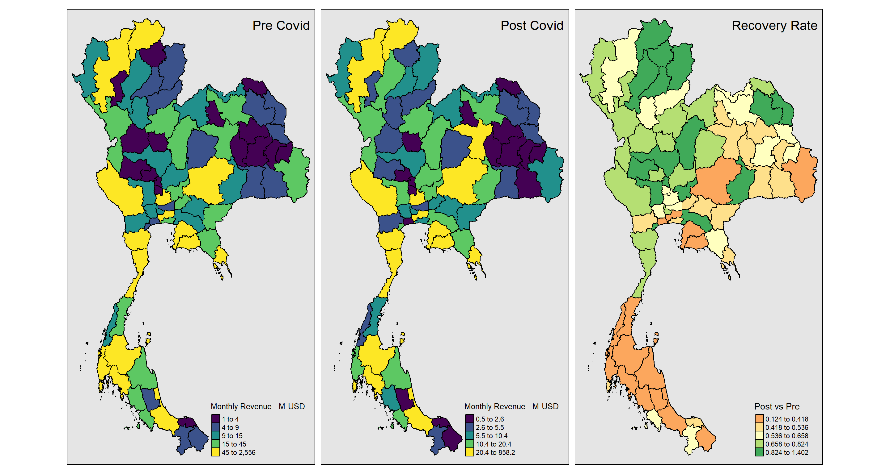
As also seen in the scatterplot, we also see some change in rankings with the maps. For example, some provinces previously in the top 20% have moved down to the next 20%. (e.g., Khon Kaen and Phang Nga)
If we focus on the third map, we also see what seems like a cluster of provinces in the south which are lagging with regards to their recovery on the average tourism revenue. We will watch out for these once we conduct our cluster analyses.
C.2 Number of Tourists
The next measure we can look at is the number of tourists. We produce a similar line chart as we did for tourism revenue with the code chunk below. We display the number of tourists in thousands.
# Subset the data to just the required indicators
aggregated_data <- tourism %>%
filter(Indicator %in% c("no_tourist_all", "no_tourist_thai", "no_tourist_foreign")) %>%
group_by(MonthYear, Indicator) %>%
summarise(TotalValue = sum(Value, na.rm = TRUE) / 1000) %>%
ungroup()`summarise()` has grouped output by 'MonthYear'. You can override using the
`.groups` argument.# Create the line chart
p <- ggplot(aggregated_data, aes(x = MonthYear, y = TotalValue, color = Indicator, group = Indicator)) +
geom_line(size = 1) +
labs(title = "Thailand Number of Tourists by Month",
y = "Tourists, Thousands",
x = "Month-Year") +
theme_minimal() +
theme(axis.text.x = element_text(angle = 90, vjust = 0.5, hjust = 1),
legend.position = "bottom") +
scale_color_manual(values = c("no_tourist_all" = "blue", "no_tourist_thai" = "green", "no_tourist_foreign" = "red"))
# Convert the ggplot chart to an interactive plotly chart
interactive_plot <- ggplotly(p)
# Display the interactive plot
interactive_plotThe trend for the total follows the same general movement as the chart for revenue, however, it looks like tourist numbers are primarily driven by locals than foreigners.
Similar to the previous section, we can produce an interactive scatterplot to see the number of tourists each province gets on average before and after the pandemic. We do this first for the total number of tourists.
plot <- plot_ly(
data = tourism_period,
x = ~PreCovid_tourists_total,
y = ~PostCovid_tourists_total,
type = 'scatter',
mode = 'markers',
text = ~Province,
hoverinfo = 'text'
) %>%
layout(
title = 'Monthly Pre- and Post-Covid No of Tourists',
xaxis = list(title = 'PreCovid Average'),
yaxis = list(title = 'PostCovid Average')
)
# Display the plot
plotBangkok, Chonburi and Phuket had the highest number of visitors pre-Covid, but Phuket appears to have dropped off in favor of Kanchanaburi post-covid.
We can also look at the foreign tourists using the code chunk below. We skip local tourists and focus only on foreign ones as they deviate from the overall number.
plot <- plot_ly(
data = tourism_period,
x = ~PreCovid_tourists_foreign,
y = ~PostCovid_tourists_foreign,
type = 'scatter',
mode = 'markers',
text = ~Province,
hoverinfo = 'text'
) %>%
layout(
title = 'Monthly Pre- and Post-Covid No of Foreign Tourists',
xaxis = list(title = 'PreCovid Average'),
yaxis = list(title = 'PostCovid Average')
)
# Display the plot
plotBangkok, Phuket and Chonburi appear as the top 3 destinations for foreign tourists (in terms of number) before and after Covid. We also see that Krabi dropped from the top 3 post covid.
We can also produce side-by-side maps for the number of tourists and their recovery rates using the code chunk below.
tm_shape(thaitourism_sf) +
tm_fill(col = c("PreCovid_tourists_total", "PostCovid_tourists_total", "Tourists_total_recovery"),
style = "quantile",
palette = list("viridis", "viridis", "RdYlGn"),
title = c("Monthly Tourists", "Monthly Tourists", "Post vs Pre")) +
tm_borders(col = "black") +
tm_layout(title = c("Pre Covid", "Post Covid", "Recovery Rate"),
title.position = c("right", "top"),
legend.position = c("right", "bottom"),
bg.color = "grey90")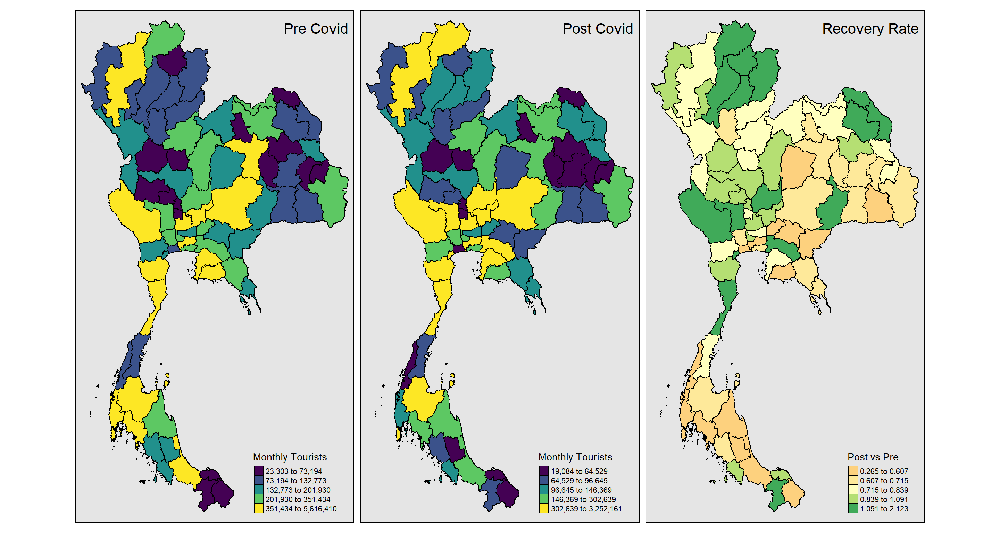
We again see the southern region mostly lagging with regards to their recovery post covid also in terms of the number of visitors.
C.3 Average Spend Per Visitor
We next look at the average per spend per visitor which is the quotient of the tourism revenue and the total number of tourists. This will tell us whether tourists are spending more or less around the pandemic.
First we produce a similar line graph as before to look at the trend at an overall picture using the code chunk below.
# Subset the data to just the required indicators
aggregated_data <<- tourism %>%
group_by(MonthYear) %>%
summarise(
Spend_total = sum(Value[Indicator == "revenue_all"]) / sum(Value[Indicator == "no_tourist_all"]) * 1000000 / 34.784,
Spend_thai = sum(Value[Indicator == "revenue_thai"]) / sum(Value[Indicator == "no_tourist_thai"]) * 1000000 / 34.784,
Spend_foreign = sum(Value[Indicator == "revenue_foreign"]) / sum(Value[Indicator == "no_tourist_foreign"]) * 1000000 / 34.784
) %>%
pivot_longer(cols = starts_with("Spend"), names_to = "Indicator", values_to = "TotalValue") %>%
mutate(Indicator = case_when(
Indicator == "Spend_total" ~ "Spend_total",
Indicator == "Spend_thai" ~ "Spend_thai",
Indicator == "Spend_foreign" ~ "Spend_foreign"
))
# Create the line chart
p <- ggplot(aggregated_data, aes(x = MonthYear, y = TotalValue, color = Indicator, group = Indicator)) +
geom_line(size = 1) +
labs(title = "Thailand Average Spend Per Tourist by Month",
y = "Average Spend, USD",
x = "Month-Year") +
theme_minimal() +
theme(axis.text.x = element_text(angle = 90, vjust = 0.5, hjust = 1),
legend.position = "bottom") +
scale_color_manual(values = c("Spend_total" = "blue", "Spend_thai" = "green", "Spend_foreign" = "red"))
# Convert the ggplot chart to an interactive plotly chart
interactive_plot <- ggplotly(p)
# Display the interactive plot
interactive_plotThe chart shows that the average spend of foreign tourists are much higher than local ones and appears to be the same before and after Covid. There appears to be a shift in the average spend for all tourists overall which is probably driven by an increase in the contribution for the number of local tourists versus foreign tourists. Local tourists appear to show a step decrease after covid as well in terms of their average spending.
Next, we check the average spending of tourists across provinces using a similar scatterplot as before.
plot <- plot_ly(
data = tourism_period,
x = ~PreCovidSpend_total,
y = ~PostCovidSpend_total,
type = 'scatter',
mode = 'markers',
text = ~Province,
hoverinfo = 'text'
) %>%
layout(
title = 'Monthly Pre- and Post-Covid Average Spend Per Tourist',
xaxis = list(title = 'PreCovid Average $'),
yaxis = list(title = 'PostCovid Average $')
)
# Display the plot
plotPhuket saw the highest average spend pre- and post-covid. Krabi was second highest pre-Covid but drop to third, as Bangkok rose from fourth to second over that period.
We can do the same for foreign tourists as the earlier chart showed that it was very different from the total. We use the code chunk below tor produce a similar scatterplot but taking the foreign tourist figures.
plot <- plot_ly(
data = tourism_period,
x = ~PreCovidSpend_foreign,
y = ~PostCovidSpend_foreign,
type = 'scatter',
mode = 'markers',
text = ~Province,
hoverinfo = 'text'
) %>%
layout(
title = 'Monthly Pre- and Post-Covid Average Spend Per Foreign Tourist',
xaxis = list(title = 'PreCovid Average $'),
yaxis = list(title = 'PostCovid Average $')
)
# Display the plot
plotPhuket, Bangkok and Chonburi have been consistent as top 4 highest spend for foreign tourists. From the chart above, we see that Chiang Rai has risen to the number five spot for highest foreign tourist spending post-Covid.
We can also produce a map visualization of the average spend using tmap package. We focus on the total tourist population in the visualization below.
tm_shape(thaitourism_sf) +
tm_fill(col = c("PreCovidSpend_total", "PostCovidSpend_total", "Spend_total_recovery"),
style = "quantile",
palette = list("viridis", "viridis", "RdYlGn"),
title = c("Average Tourist Spending", "Average Tourist Spending", "Post vs Pre")) +
tm_borders(col = "black") +
tm_layout(title = c("Pre Covid", "Post Covid", "Recovery Rate"),
title.position = c("right", "top"),
legend.position = c("right", "bottom"),
bg.color = "grey90")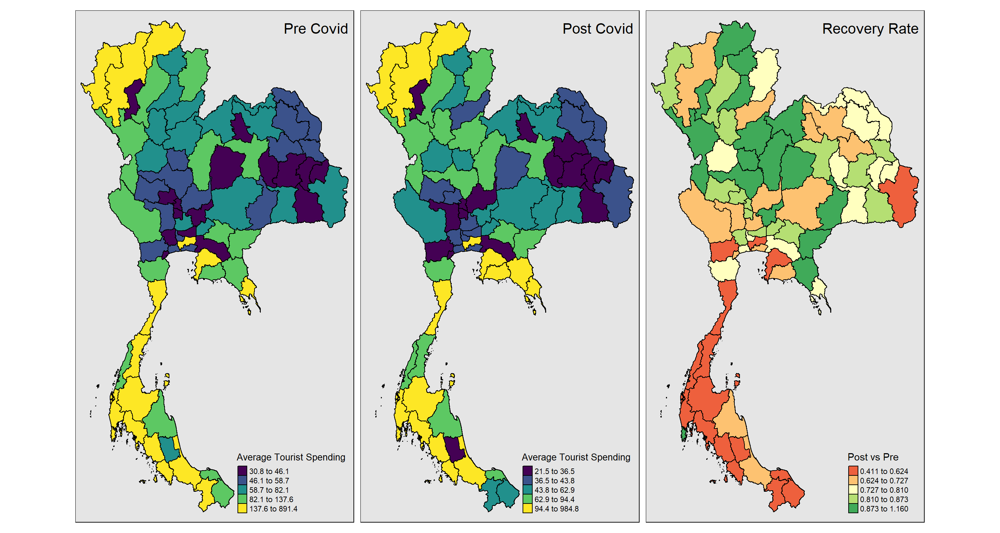
We again see slow recovery in the southern region, but at the same time, this region has the highest average spending pre- and post-covid. (i.e., top 20%)
C.4 Occupancy Rate
The final single indicator we will look at is the occupancy rate. We have not prepared and included the data for occupancy rate before as this is a ratio measure which be just summed or averaged. In order to be able to aggregate occupancy rate, we not only need the actual occupancy rate from the data, but we also need the number of rooms occupied which is given by the no_tourist_occupied indicator in the data, and also the number of rooms in total– which is not included in the data.
The following code chunk prepares a new dataframe from tourist with the following transformation steps:
Retain MonthYear, Province, and records for occupany rate and number of rooms occupied
Keep values for the two indicators as separate columns. We use average just in case a province appears multiple times on the same date (to resolve conflicts)
We compute the total number of rooms as the number of rooms occupied divided by the occupancy rate
We add the tags for the period for pre- and post- covid
occupancy_df <- tourism %>%
filter(Indicator %in% c("occupancy_rate", "no_tourist_occupied")) %>%
group_by(Date, MonthYear, Province) %>%
summarise(
occupancy = mean(Value[Indicator == "occupancy_rate"], na.rm = TRUE),
occupied_rooms = mean(Value[Indicator == "no_tourist_occupied"], na.rm = TRUE)
) %>%
ungroup() %>%
mutate(total_rooms = ifelse(occupancy == 0, 0, occupied_rooms / occupancy * 100))`summarise()` has grouped output by 'Date', 'MonthYear'. You can override using
the `.groups` argument.occupancy_df$Period <- ifelse(occupancy_df$Date < as.Date("2020-02-01"), "Pre-Covid",
ifelse(occupancy_df$Date > as.Date("2021-10-01"), "Post-Covid", "Covid"))
head(occupancy_df)# A tibble: 6 × 7
Date MonthYear Province occupancy occupied_rooms total_rooms Period
<date> <chr> <chr> <dbl> <dbl> <dbl> <chr>
1 2019-01-01 2019-01 Amnat Charoen 65.2 8551 13125. Pre-C…
2 2019-01-01 2019-01 Ang Thong 71.2 19140 26878. Pre-C…
3 2019-01-01 2019-01 Bangkok 93.4 3334971 3571780. Pre-C…
4 2019-01-01 2019-01 Bueng Kan 73.0 37974 52055. Pre-C…
5 2019-01-01 2019-01 Buriram 71.3 113655 159493. Pre-C…
6 2019-01-01 2019-01 Chachoengsao 59.4 38687 65130. Pre-C…Before we produce the charts, let us update thaitourism_sf with the aggregated occupancy rates by:
- Computing Pre- and Post-covid total number of rooms and occupied rooms per province
- Computing Pre- and Post-covid occupancy rate per province based on step 1
- Add the new columns into
thaitourism_sfusingleft_join()
The first two steps are accomplished in the first code block while the third step is accomplished in the second.
occupancy_summary <- occupancy_df %>%
group_by(Province) %>%
summarise(
PreCovid_occupied_rooms = sum(occupied_rooms[Period == "Pre-Covid"], na.rm = TRUE),
PostCovid_occupied_rooms = sum(occupied_rooms[Period == "Post-Covid"], na.rm = TRUE),
PreCovid_total_rooms = sum(total_rooms[Period == "Pre-Covid"], na.rm = TRUE),
PostCovid_total_rooms = sum(total_rooms[Period == "Post-Covid"], na.rm = TRUE)
) %>%
mutate(
PreCovid_occupancy = ifelse(PreCovid_total_rooms == 0, 0, (PreCovid_occupied_rooms / PreCovid_total_rooms) * 100),
PostCovid_occupancy = ifelse(PostCovid_total_rooms == 0, 0, (PostCovid_occupied_rooms / PostCovid_total_rooms) * 100)
)
head(occupancy_summary)# A tibble: 6 × 7
Province PreCovid_occupied_ro…¹ PostCovid_occupied_r…² PreCovid_total_rooms
<chr> <dbl> <dbl> <dbl>
1 Amnat Char… 106667 91166 189198.
2 Ang Thong 208960 116396 324038.
3 Bangkok 39621389 23666935 47956613.
4 Bueng Kan 362415 465507 608851.
5 Buriram 1319062 1827050 2137721.
6 Chachoengs… 518580 372576 917461.
# ℹ abbreviated names: ¹PreCovid_occupied_rooms, ²PostCovid_occupied_rooms
# ℹ 3 more variables: PostCovid_total_rooms <dbl>, PreCovid_occupancy <dbl>,
# PostCovid_occupancy <dbl>thaitourism_sf <- left_join(thaitourism_sf, occupancy_summary, by = c("Province"="Province"))
class(thaitourism_sf)[1] "sf" "data.frame"Finally, we add a column for the recovery of the occupancy rate using the code chunk below.
thaitourism_sf <- mutate(thaitourism_sf, Occupancy_recovery = ifelse(PreCovid_occupancy == 0, 0, (PostCovid_occupancy / PreCovid_occupancy)), .before = -1)class(thaitourism_sf)[1] "sf" "data.frame"For the first visualization, let us plot the occupancy rate at a total level. The code below summarizes based on occupancy_df and computes a national occupancy rate to plot in a line chart.
aggregated_data <<- occupancy_df %>%
group_by(MonthYear) %>%
summarise(
occupancy_rate = sum(occupied_rooms, na.rm = TRUE) / sum(total_rooms, na.rm = TRUE) * 100
)
ggplot(aggregated_data, aes(x = MonthYear, y = occupancy_rate, group = 1)) +
geom_line() +
labs(
title = "Occupancy Rate Over Time",
x = "MonthYear",
y = "Occupancy Rate (%)"
) +
theme_minimal() +
theme(axis.text.x = element_text(angle = 90, hjust = 1))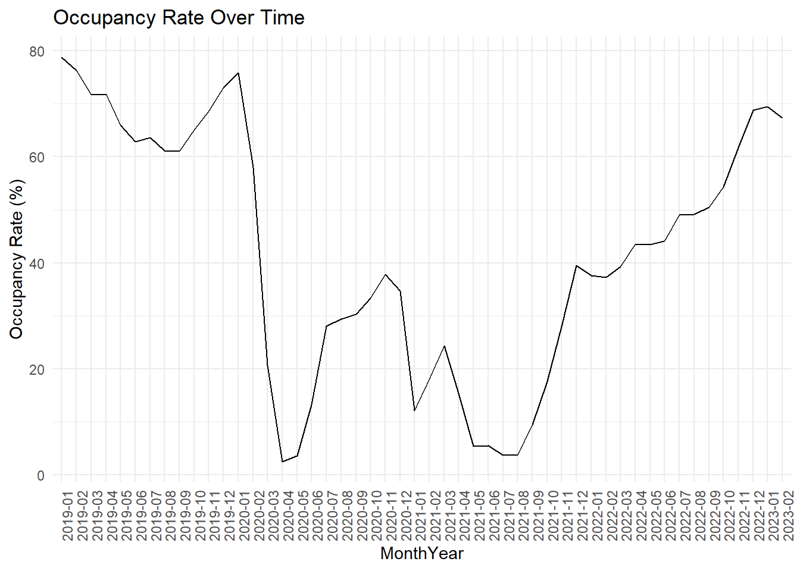
The chart shows that occupancy rate has picked up after October 2021 and appears to have more or less reached pre-covid levels in the most recent months.
We can also produce a scatterplot to show pre- and post-covid occupancy rates at a province level. We do this using the code chunk below which produces an interactive plot.
plot <- plot_ly(
data = occupancy_summary,
x = ~PreCovid_occupancy,
y = ~PostCovid_occupancy,
type = 'scatter',
mode = 'markers',
text = ~paste('Province:', Province, '<br>PreCovid Occupancy:', round(PreCovid_occupancy), '<br>PostCovid Occupancy:', round(PostCovid_occupancy)),
hoverinfo = 'text'
) %>%
layout(
title = 'Monthly Pre- and Post-Covid Occupancy Rate (%)',
xaxis = list(title = 'PreCovid Occupancy'),
yaxis = list(title = 'PostCovid Occupancy')
)
# Display the plot
plotThe occupancy rates are showing a dispersed pattern as the overall rankings on occupancy rates have significantly changed pre- and post-covid. Bangkok, Chonburi and Suphan Buri reported the highest occupancy rates before covid, but Nan, Chang Rai and Nakhon Phanom have the highest rates post covid.
The next visualization for this measure is a side-by-side map for the pre- and post-covid occupancy rates as well as the recovery rate for occupancy. We use the code chunk below which uses tmap package to produce the maps.
tm_shape(thaitourism_sf) +
tm_fill(col = c("PreCovid_occupancy", "PostCovid_occupancy", "Occupancy_recovery"),
style = "quantile",
palette = list("viridis", "viridis", "RdYlGn"),
title = c("Average Occupancy Rate", "Average Occupancy Rate", "Post vs Pre")) +
tm_borders(col = "black") +
tm_layout(title = c("Pre Covid", "Post Covid", "Recovery Rate"),
title.position = c("right", "top"),
legend.position = c("right", "bottom"),
bg.color = "grey90")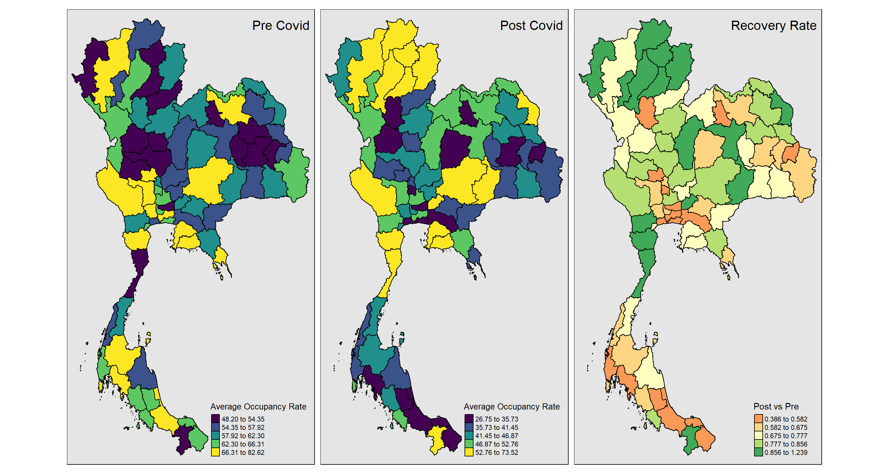
Before we leave this section, let us try to understand occupancy rate a bit more. Going back to earlier, we want to understand if high occupancy rate post-Covid is being driven by the number of available rooms. To help us answer this, we create a scatterplot of the available rooms against the occupancy rate post-Covid using the code chunk below.
plot <- plot_ly(
data = occupancy_summary,
x = ~PostCovid_total_rooms,
y = ~PostCovid_occupancy,
type = 'scatter',
mode = 'markers',
text = ~paste('Province:', Province, '<br>Number of Rooms:', round(PostCovid_total_rooms), '<br>Occupancy Rate:', round(PostCovid_occupancy)),
hoverinfo = 'text'
) %>%
layout(
title = 'Post-Covid Number of Rooms and Occupancy Rate (%)',
xaxis = list(title = 'Number of Rooms'),
yaxis = list(title = 'Occupancy Rate')
)
# Display the plot
plotBelow 10M rooms, there appears to be an upward trend in occupancy rate to the number of rooms. Provinces with more than 10M rooms go against the trend and appear to be capped to 60% occupancy.
D. Testing for Global Spatial Autocorrelation
Testing for spatial autocorrelation allows us to statistically determine if any of the indicator variables are dependent on space or location. These techniques also are useful for classifying clusters and outliers for particular variables of concern.
D.1 Variable Selection
We will turn our attention to the first three measures discussed discussed in the previous section: tourism revenue, number of tourists and average tourist spending. We will not analyse the occupancy rate further as it is highly dependent on the number of rooms.
We will focus on checking signs of spatial autocorrelation or association before and after covid, as well as the recovery rate at the overall level for these three indicators– so we will be looking at 9 variables for our analysis.
D.2 Deriving the Contiguity and Weight Matrix
For the tests for this section, we need to derive a neighbor list as well as a weight matrix for each province to its neighbors. Given the presence of islands, we need to use distance rather than contiguity to define neighbors.
The first step is to understand the distribution of distances between nearest neighbors to find a proper cut-off distance. The code chunk below
longitude <- map_dbl(thaitourism_sf$geometry, ~st_centroid(.x)[[1]])
latitude <- map_dbl(thaitourism_sf$geometry, ~st_centroid(.x)[[2]])
coords <- cbind(longitude, latitude)
k1 <- knn2nb(knearneigh(coords))
k1dists <- unlist(nbdists(k1, coords, longlat = TRUE))
summary(k1dists) Min. 1st Qu. Median Mean 3rd Qu. Max.
21.55 51.92 64.33 63.24 76.77 110.94 The maximum distance is 110.94 so setting a distance threshold of 111 should ensure that each province should have at least one neighbor. We then produce a nearest neighbor list for each province using dnearneigh()
wm_d111 <- dnearneigh(coords, 0, 111, longlat = TRUE)
wm_d111Neighbour list object:
Number of regions: 77
Number of nonzero links: 350
Percentage nonzero weights: 5.903188
Average number of links: 4.545455
2 disjoint connected subgraphsWe import this as a new column in our sf object and compute for weights using st_weights() based on this.
wm_thai <- thaitourism_sf %>%
mutate(nb = I(wm_d111),
wt = st_weights(nb,
style="W"),
.before=1)D.3 Global Moran’s I Test
Global tests of spatial autocorrelation compares the value of each point/province to the overall value in order to conclude on spatial dependence. For this, we will focus on using Global Moran’s I which will work on the following general hypotheses:
\(H_0\) - The value of (variable) is randomly distributed across provinces in Thailand
\(H_1\) - The value of (variable) is not randomly distributed across provinces in Thailand
Further, the value of the test statistic \(I\) will also give indication on the underlying pattern:
\(I > 0\) - Clustering; observations tend to be similar
\(I < 0\) - Dispersed / regular; observations tend to be dissimilar
Where \(I\) close to zero - observations are arranged randomly
To perform Global Moran’s I test, with permutations, we use global_moran_perm() from sfdep package. We will use a 5% significance level for all the testing to be performed, and we will run 100 permutations / simulations for each test.
D.3.1 Global Moran’s Test on Tourism Revenue
The code chunks in the tabs below run the Global Moran’s I permutation test on total tourism revenue (per month) pre-Covid, post-Covid and the recovery rate.
global_moran_perm(wm_thai$PreCovid_Revenue_total,
wm_thai$nb,
wm_thai$wt,
nsim = 99)
Monte-Carlo simulation of Moran I
data: x
weights: listw
number of simulations + 1: 100
statistic = 0.049413, observed rank = 93, p-value = 0.14
alternative hypothesis: two.sidedglobal_moran_perm(wm_thai$PostCovid_Revenue_total,
wm_thai$nb,
wm_thai$wt,
nsim = 99)
Monte-Carlo simulation of Moran I
data: x
weights: listw
number of simulations + 1: 100
statistic = 0.020361, observed rank = 84, p-value = 0.32
alternative hypothesis: two.sidedglobal_moran_perm(wm_thai$Revenue_total_recovery,
wm_thai$nb,
wm_thai$wt,
nsim = 99)
Monte-Carlo simulation of Moran I
data: x
weights: listw
number of simulations + 1: 100
statistic = 0.43763, observed rank = 100, p-value < 2.2e-16
alternative hypothesis: two.sidedThe results show no evidence to reject spatial independence for the total revenue pre- and post-Covid. However, it shows signs of clustering for the revenue recovery rate as the p-value is below 0.05 and the statistic is above 1.
D.3.2 Global Moran’s Test on Number of Tourists
The code chunks in the tabs below run the Global Moran’s I permutation test on total number of tourists (per month) pre-Covid, post-Covid and the recovery rate.
global_moran_perm(wm_thai$PreCovid_tourists_total,
wm_thai$nb,
wm_thai$wt,
nsim = 99)
Monte-Carlo simulation of Moran I
data: x
weights: listw
number of simulations + 1: 100
statistic = 0.062493, observed rank = 92, p-value = 0.16
alternative hypothesis: two.sidedglobal_moran_perm(wm_thai$PostCovid_tourists_total,
wm_thai$nb,
wm_thai$wt,
nsim = 99)
Monte-Carlo simulation of Moran I
data: x
weights: listw
number of simulations + 1: 100
statistic = 0.10696, observed rank = 95, p-value = 0.1
alternative hypothesis: two.sidedglobal_moran_perm(wm_thai$Tourists_total_recovery,
wm_thai$nb,
wm_thai$wt,
nsim = 99)
Monte-Carlo simulation of Moran I
data: x
weights: listw
number of simulations + 1: 100
statistic = 0.27768, observed rank = 100, p-value < 2.2e-16
alternative hypothesis: two.sidedWe see similar results here. The results show no evidence to reject spatial independence for the total number of tourists pre- and post-Covid. However, it shows signs of clustering for the number of tourists recovery rate as the p-value is below 0.05 and the statistic is above 1.
D.3.3 Global Moran’s Test on Average Tourist Spend
The code chunks in the tabs below run the Global Moran’s I permutation test on average tourist spend pre-Covid, post-Covid and the recovery rate.
global_moran_perm(wm_thai$PreCovidSpend_total,
wm_thai$nb,
wm_thai$wt,
nsim = 99)
Monte-Carlo simulation of Moran I
data: x
weights: listw
number of simulations + 1: 100
statistic = 0.423, observed rank = 100, p-value < 2.2e-16
alternative hypothesis: two.sidedglobal_moran_perm(wm_thai$PostCovidSpend_total,
wm_thai$nb,
wm_thai$wt,
nsim = 99)
Monte-Carlo simulation of Moran I
data: x
weights: listw
number of simulations + 1: 100
statistic = 0.20651, observed rank = 100, p-value < 2.2e-16
alternative hypothesis: two.sidedglobal_moran_perm(wm_thai$Spend_total_recovery,
wm_thai$nb,
wm_thai$wt,
nsim = 99)
Monte-Carlo simulation of Moran I
data: x
weights: listw
number of simulations + 1: 100
statistic = 0.31497, observed rank = 100, p-value < 2.2e-16
alternative hypothesis: two.sidedAverage tourist spending is showing signs of clustering on all dimensions (pre-Covid, post-Covid and the recovery rate) as the p-value is below 0.05 and the I statistic is above 0 in all cases.
D.3.3 Global Moran’s Test Summary
Based on the results of the testing on the total revenue, number of tourists and spend, we see that the following variables are not exhibiting a random distribution, and show signs of clustering:
Total tourism revenue recovery rate
Total number of tourists recovery rate
Pre-Covid Average spend per Tourist
Post-Covid Average spend per Tourist
Average spend per tourist recovery rate
We will conduct tests for local association to identify the clusters and outliers among provinces for each of these variables.
E. Testing for Local Spatial Association
In this section, we compute for LISA or local indicators of spatial association which allow us to identify clusters or outliers in the data for the five variables mentioned above.
The measure we will be using is Local Moran I using local_moran() which is also included in sfdep package. The local version computes for a test statistic and p-value for each observation/province. For each variable, we will perform the following steps:
Run local Moran I for the variable
Observe and visualize test statistic (I) and p values (simulated)
Generate and analyse the LISA map to identify statistically significant clusters and outliers
E.1 Analysing LISA: Total tourism recovery rate
We first compute for the LISA for the recovery rate of the total number of tourists using local_moran() function in the code chunk below. The code below uses 100 simulations to produce the test results.
lisa <- wm_thai %>%
mutate(local_moran = local_moran(
Revenue_total_recovery, nb, wt, nsim = 99),
.before = 1) %>%
unnest(local_moran)We can then visualize the test statistic and p-values for each province in a map using tmap package in the code chunk below.
tmap_mode("plot")tmap mode set to plottingtm_shape(lisa) +
tm_fill(c("ii", "p_ii_sim"), title = c("Local Moran's I","P Value")) +
tm_borders(alpha = 0.5) +
tm_view(set.zoom.limits = c(6,8)) +
tm_layout(
main.title = "LISA for Total Revenue Recovery Rate",
legend.position = c("right", "bottom"),
bg.color = "grey90")Variable(s) "ii" contains positive and negative values, so midpoint is set to 0. Set midpoint = NA to show the full spectrum of the color palette.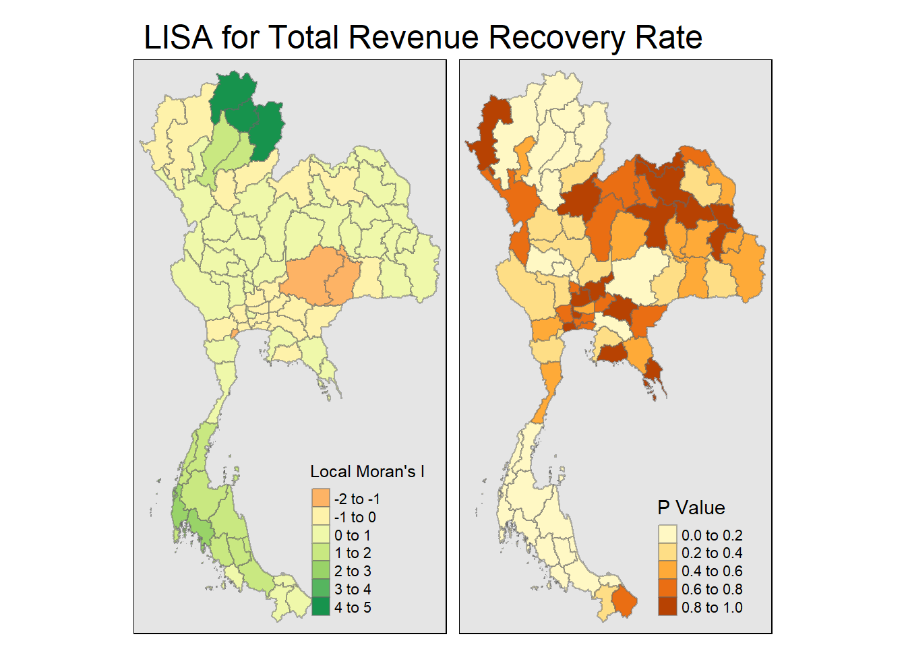
Outliers are generally provinces where the test statistic is negative, and clusters where it is positive– if they are significant. We see some potential outliers. We can produce a different set of plots to allow us to identify these types of provinces.
Using a LISA map, we can show graphically the location of clusters and outliers based on this (tourism revenue recovery rate)
lisa_sig <- lisa %>%
filter(p_ii_sim < 0.05)
tm_shape(lisa) +
tm_polygons() +
tm_borders(alpha = 0.5) +
tm_shape(lisa_sig) +
tm_fill("mean", title = "LISA Class α=5% ") +
tm_borders(alpha = 0.4) +
tm_text("Province", size = 0.5) +
tm_layout(
main.title = "Revenue Recovery Rate",
legend.position = c("right", "bottom"),
bg.color = "beige",
asp = 0)Warning: One tm layer group has duplicated layer types, which are omitted. To
draw multiple layers of the same type, use multiple layer groups (i.e. specify
tm_shape prior to each of them).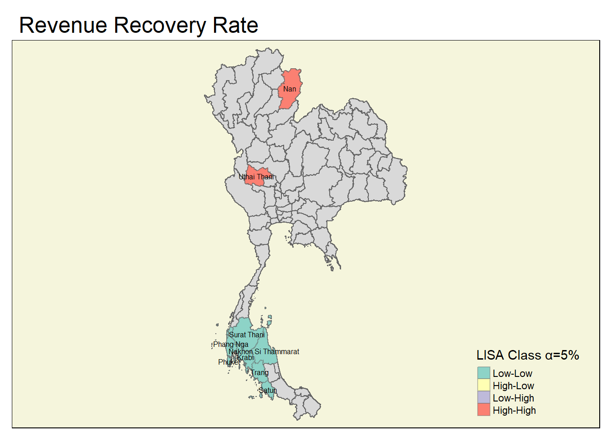
We can also observe the contents of the object lisa_sig to see the statistics for the identified significant provinces. The code chunk below shows each class separately for easier reference.
lisa_sig[lisa_sig$mean == "Low-Low", c("Province", "mean")]Simple feature collection with 7 features and 2 fields
Geometry type: MULTIPOLYGON
Dimension: XY
Bounding box: xmin: 97.63083 ymin: 6.422716 xmax: 100.3366 ymax: 10.12626
Geodetic CRS: WGS 84
# A tibble: 7 × 3
Province mean geometry
<chr> <fct> <MULTIPOLYGON [°]>
1 Nakhon Si Thammarat Low-Low (((99.77467 9.313729, 99.77478 9.313647, 99.77488…
2 Krabi Low-Low (((99.11329 7.489274, 99.11337 7.489274, 99.11343…
3 Phang Nga Low-Low (((98.61471 7.74431, 98.61461 7.74431, 98.61437 7…
4 Phuket Low-Low (((98.31437 7.478515, 98.31425 7.478502, 98.31417…
5 Surat Thani Low-Low (((99.96396 9.309907, 99.96376 9.30955, 99.96353 …
6 Satun Low-Low (((100.0903 6.425736, 100.09 6.425543, 100.0896 6…
7 Trang Low-Low (((99.47579 6.97262, 99.47565 6.972616, 99.47537 …lisa_sig[lisa_sig$mean == "High-High", c("Province", "mean")]Simple feature collection with 2 features and 2 fields
Geometry type: MULTIPOLYGON
Dimension: XY
Bounding box: xmin: 98.984 ymin: 14.94191 xmax: 101.3582 ymax: 19.63808
Geodetic CRS: WGS 84
# A tibble: 2 × 3
Province mean geometry
<chr> <fct> <MULTIPOLYGON [°]>
1 Nan High-High (((100.8948 19.63432, 100.8952 19.63431, 100.8957 19.63…
2 Uthai Thani High-High (((99.13905 15.79655, 99.13918 15.79652, 99.13965 15.79…lisa_sig[lisa_sig$mean == "High-Low", c("Province", "mean")]Simple feature collection with 0 features and 2 fields
Bounding box: xmin: NA ymin: NA xmax: NA ymax: NA
Geodetic CRS: WGS 84
# A tibble: 0 × 3
# ℹ 3 variables: Province <chr>, mean <fct>, geometry <GEOMETRY [°]>lisa_sig[lisa_sig$mean == "Low-High", c("Province", "mean")]Simple feature collection with 0 features and 2 fields
Bounding box: xmin: NA ymin: NA xmax: NA ymax: NA
Geodetic CRS: WGS 84
# A tibble: 0 × 3
# ℹ 3 variables: Province <chr>, mean <fct>, geometry <GEOMETRY [°]>We can summarize the findings from this analysis as:
There is a cluster of 7 provinces at the south of Thailand that have slower recovery in terms of their average tourism revenue. This includes popular destinations like Phuket and Krabi and their neighboring provinces
There is a cluster of 3 provinces in the north that have faster recovery on the same metric. This includes Chiang Rai, Nan and Phayao
The analysis revealed two outliers. Chachoengsao has high recovery while neighboring provinces are low. Nakhon Ratchasima has low recovery while neighboring provinces are high
reveal the following
E.2 Analysing LISA: Number of tourists recovery rate
We compute for the LISA using local_moran() function for the number of tourist recovery rate in the code chunk below.
lisa <- wm_thai %>%
mutate(local_moran = local_moran(
Tourists_total_recovery, nb, wt, nsim = 99),
.before = 1) %>%
unnest(local_moran)We will go straight to producing the LISA map based on the lisa object. Again, we use 0.05 to determine statistical significance.
lisa_sig <- lisa %>%
filter(p_ii_sim < 0.05)
tm_shape(lisa) +
tm_polygons() +
tm_borders(alpha = 0.5) +
tm_shape(lisa_sig) +
tm_fill("mean", title = "LISA Class α=5% ") +
tm_borders(alpha = 0.4) +
tm_text("Province", size = 0.5) +
tm_layout(
main.title = "No of Tourist Recovery Rate",
legend.position = c("right", "bottom"),
bg.color = "beige",
asp = 0)Warning: One tm layer group has duplicated layer types, which are omitted. To
draw multiple layers of the same type, use multiple layer groups (i.e. specify
tm_shape prior to each of them).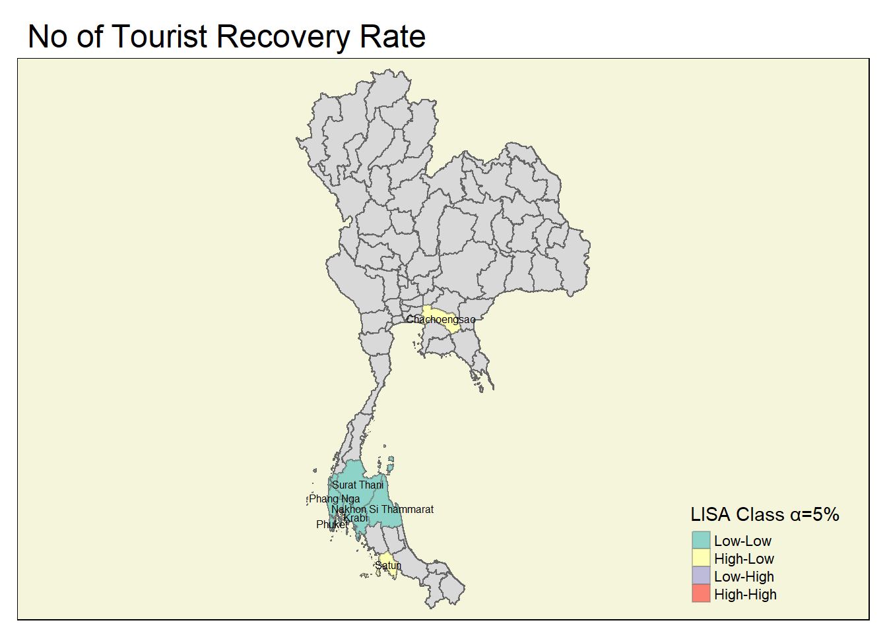
To aid interpretation, we display results tabularly as before using the code chunk below.
lisa_sig[lisa_sig$mean == "Low-Low", c("Province", "mean")]Simple feature collection with 5 features and 2 fields
Geometry type: MULTIPOLYGON
Dimension: XY
Bounding box: xmin: 97.63083 ymin: 7.467277 xmax: 100.3366 ymax: 10.12626
Geodetic CRS: WGS 84
# A tibble: 5 × 3
Province mean geometry
<chr> <fct> <MULTIPOLYGON [°]>
1 Nakhon Si Thammarat Low-Low (((99.77467 9.313729, 99.77478 9.313647, 99.77488…
2 Krabi Low-Low (((99.11329 7.489274, 99.11337 7.489274, 99.11343…
3 Phang Nga Low-Low (((98.61471 7.74431, 98.61461 7.74431, 98.61437 7…
4 Phuket Low-Low (((98.31437 7.478515, 98.31425 7.478502, 98.31417…
5 Surat Thani Low-Low (((99.96396 9.309907, 99.96376 9.30955, 99.96353 …lisa_sig[lisa_sig$mean == "High-High", c("Province", "mean")]Simple feature collection with 0 features and 2 fields
Bounding box: xmin: NA ymin: NA xmax: NA ymax: NA
Geodetic CRS: WGS 84
# A tibble: 0 × 3
# ℹ 3 variables: Province <chr>, mean <fct>, geometry <GEOMETRY [°]>lisa_sig[lisa_sig$mean == "High-Low", c("Province", "mean")]Simple feature collection with 2 features and 2 fields
Geometry type: MULTIPOLYGON
Dimension: XY
Bounding box: xmin: 99.15364 ymin: 6.422716 xmax: 101.9901 ymax: 13.9767
Geodetic CRS: WGS 84
# A tibble: 2 × 3
Province mean geometry
<chr> <fct> <MULTIPOLYGON [°]>
1 Chachoengsao High-Low (((101.0612 13.97613, 101.0625 13.976, 101.0629 13.9760…
2 Satun High-Low (((100.0903 6.425736, 100.09 6.425543, 100.0896 6.42572…lisa_sig[lisa_sig$mean == "Low-High", c("Province", "mean")]Simple feature collection with 0 features and 2 fields
Bounding box: xmin: NA ymin: NA xmax: NA ymax: NA
Geodetic CRS: WGS 84
# A tibble: 0 × 3
# ℹ 3 variables: Province <chr>, mean <fct>, geometry <GEOMETRY [°]>The findings can be summarized as:
There is a cluster at the south of five provinces with slower recovery with regards to the number of tourists– including Phuket and Krabi (similar to previous metric)
Satun at the southern part has high recovery rate while its neighboring provinces are lower
E.3 Analysing LISA: Pre-Covid Average Spend
We compute for the LISA using local_moran() function for the average tourist spending post-Covid in the code chunk below.
lisa <- wm_thai %>%
mutate(local_moran = local_moran(
PreCovidSpend_total, nb, wt, nsim = 99),
.before = 1) %>%
unnest(local_moran)We will now produce the LISA map based on the generated lisa object. Again, we use 0.05 to determine statistical significance.
lisa_sig <- lisa %>%
filter(p_ii_sim < 0.05)
tm_shape(lisa) +
tm_polygons() +
tm_borders(alpha = 0.5) +
tm_shape(lisa_sig) +
tm_fill("mean", title = "LISA Class α=5% ") +
tm_borders(alpha = 0.4) +
tm_text("Province", size = 0.5) +
tm_layout(
main.title = "Pre-Covid Average Tourist Spend",
legend.position = c("right", "bottom"),
bg.color = "beige",
asp = 0)Warning: One tm layer group has duplicated layer types, which are omitted. To
draw multiple layers of the same type, use multiple layer groups (i.e. specify
tm_shape prior to each of them).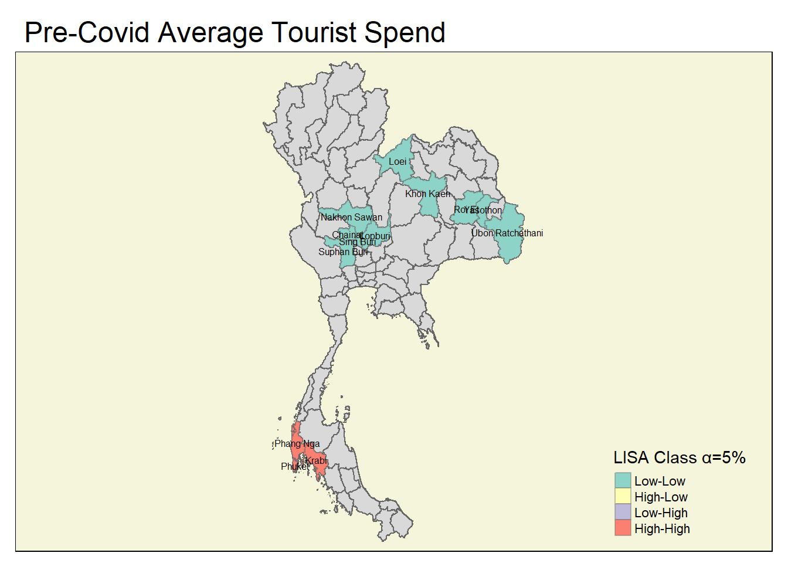
We display the results tabularly using the code chunk below to make it easier to interpret.
lisa_sig[lisa_sig$mean == "Low-Low", c("Province", "mean")]Simple feature collection with 10 features and 2 fields
Geometry type: MULTIPOLYGON
Dimension: XY
Bounding box: xmin: 99.08612 ymin: 14.06424 xmax: 105.637 ymax: 18.22037
Geodetic CRS: WGS 84
# A tibble: 10 × 3
Province mean geometry
<chr> <fct> <MULTIPOLYGON [°]>
1 Lopburi Low-Low (((101.3453 15.75254, 101.3457 15.75224, 101.3466 1…
2 Sing Buri Low-Low (((100.3691 15.0894, 100.3697 15.0891, 100.3708 15.…
3 Chainat Low-Low (((100.1199 15.41243, 100.121 15.41234, 100.1229 15…
4 Ubon Ratchathani Low-Low (((105.0633 16.09675, 105.0634 16.09671, 105.0638 1…
5 Yasothon Low-Low (((104.3952 16.34843, 104.3983 16.34707, 104.4 16.3…
6 Khon Kaen Low-Low (((102.7072 17.08713, 102.708 17.087, 102.7096 17.0…
7 Loei Low-Low (((102.095 18.21708, 102.0962 18.21675, 102.0971 18…
8 Roi Et Low-Low (((104.314 16.43758, 104.3135 16.43452, 104.3137 16…
9 Nakhon Sawan Low-Low (((100.0266 16.189, 100.0267 16.18889, 100.0268 16.…
10 Suphan Buri Low-Low (((99.37118 15.05073, 99.37454 15.0495, 99.3762 15.…lisa_sig[lisa_sig$mean == "High-High", c("Province", "mean")]Simple feature collection with 3 features and 2 fields
Geometry type: MULTIPOLYGON
Dimension: XY
Bounding box: xmin: 97.63083 ymin: 7.467277 xmax: 99.41499 ymax: 9.478956
Geodetic CRS: WGS 84
# A tibble: 3 × 3
Province mean geometry
<chr> <fct> <MULTIPOLYGON [°]>
1 Krabi High-High (((99.11329 7.489274, 99.11337 7.489274, 99.11343 7.48929…
2 Phang Nga High-High (((98.61471 7.74431, 98.61461 7.74431, 98.61437 7.744467,…
3 Phuket High-High (((98.31437 7.478515, 98.31425 7.478502, 98.31417 7.47851…lisa_sig[lisa_sig$mean == "High-Low", c("Province", "mean")]Simple feature collection with 0 features and 2 fields
Bounding box: xmin: NA ymin: NA xmax: NA ymax: NA
Geodetic CRS: WGS 84
# A tibble: 0 × 3
# ℹ 3 variables: Province <chr>, mean <fct>, geometry <GEOMETRY [°]>lisa_sig[lisa_sig$mean == "Low-High", c("Province", "mean")]Simple feature collection with 0 features and 2 fields
Bounding box: xmin: NA ymin: NA xmax: NA ymax: NA
Geodetic CRS: WGS 84
# A tibble: 0 × 3
# ℹ 3 variables: Province <chr>, mean <fct>, geometry <GEOMETRY [°]>The findings can be summarized as:
There are multiple clusters, totaling 10 provinces, in the center of Thailand that have low average spending pre-Covid. These are composed of lesser known tourist destinations
Phuket and Phang Nga make up a two-province cluster with high average tourist spending
There are no outliers identified in the analysis
E.4 Analysing LISA: Post-Covid Average Spend
We compute for the LISA using local_moran() function for the average tourist spending post-Covid in the code chunk below.
lisa <- wm_thai %>%
mutate(local_moran = local_moran(
PostCovidSpend_total, nb, wt, nsim = 99),
.before = 1) %>%
unnest(local_moran)We will now produce the LISA map based on the generated lisa object. Again, we use 0.05 to determine statistical significance.
lisa_sig <- lisa %>%
filter(p_ii_sim < 0.05)
tm_shape(lisa) +
tm_polygons() +
tm_borders(alpha = 0.5) +
tm_shape(lisa_sig) +
tm_fill("mean", title = "LISA Class α=5% ") +
tm_borders(alpha = 0.4) +
tm_text("Province", size = 0.5) +
tm_layout(
main.title = "Post-Covid Average Tourist Spend",
legend.position = c("right", "bottom"),
bg.color = "beige",
asp = 0)Warning: One tm layer group has duplicated layer types, which are omitted. To
draw multiple layers of the same type, use multiple layer groups (i.e. specify
tm_shape prior to each of them).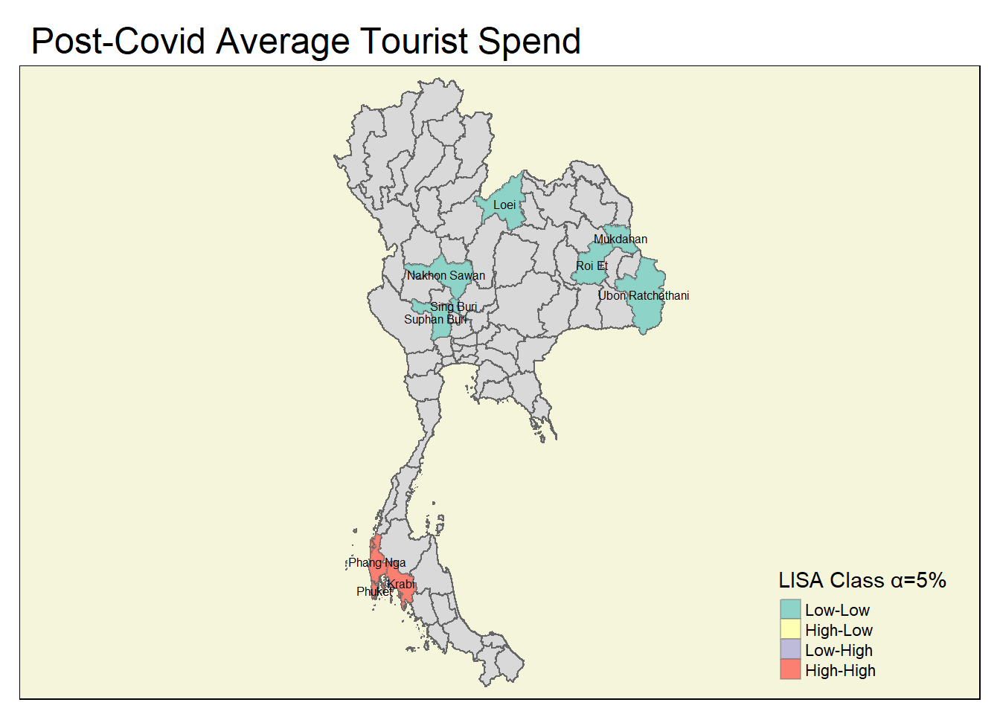
We again display the results tabularly using the code chunk below to make it easier to interpret.
lisa_sig[lisa_sig$mean == "Low-Low", c("Province", "mean")]Simple feature collection with 7 features and 2 fields
Geometry type: MULTIPOLYGON
Dimension: XY
Bounding box: xmin: 99.08612 ymin: 14.06424 xmax: 105.637 ymax: 18.22037
Geodetic CRS: WGS 84
# A tibble: 7 × 3
Province mean geometry
<chr> <fct> <MULTIPOLYGON [°]>
1 Sing Buri Low-Low (((100.3691 15.0894, 100.3697 15.0891, 100.3708 15.0…
2 Ubon Ratchathani Low-Low (((105.0633 16.09675, 105.0634 16.09671, 105.0638 16…
3 Loei Low-Low (((102.095 18.21708, 102.0962 18.21675, 102.0971 18.…
4 Roi Et Low-Low (((104.314 16.43758, 104.3135 16.43452, 104.3137 16.…
5 Mukdahan Low-Low (((104.2527 16.89302, 104.2527 16.89274, 104.2527 16…
6 Nakhon Sawan Low-Low (((100.0266 16.189, 100.0267 16.18889, 100.0268 16.1…
7 Suphan Buri Low-Low (((99.37118 15.05073, 99.37454 15.0495, 99.3762 15.0…lisa_sig[lisa_sig$mean == "High-High", c("Province", "mean")]Simple feature collection with 3 features and 2 fields
Geometry type: MULTIPOLYGON
Dimension: XY
Bounding box: xmin: 97.63083 ymin: 7.467277 xmax: 99.41499 ymax: 9.478956
Geodetic CRS: WGS 84
# A tibble: 3 × 3
Province mean geometry
<chr> <fct> <MULTIPOLYGON [°]>
1 Krabi High-High (((99.11329 7.489274, 99.11337 7.489274, 99.11343 7.48929…
2 Phang Nga High-High (((98.61471 7.74431, 98.61461 7.74431, 98.61437 7.744467,…
3 Phuket High-High (((98.31437 7.478515, 98.31425 7.478502, 98.31417 7.47851…lisa_sig[lisa_sig$mean == "High-Low", c("Province", "mean")]Simple feature collection with 0 features and 2 fields
Bounding box: xmin: NA ymin: NA xmax: NA ymax: NA
Geodetic CRS: WGS 84
# A tibble: 0 × 3
# ℹ 3 variables: Province <chr>, mean <fct>, geometry <GEOMETRY [°]>lisa_sig[lisa_sig$mean == "Low-High", c("Province", "mean")]Simple feature collection with 0 features and 2 fields
Bounding box: xmin: NA ymin: NA xmax: NA ymax: NA
Geodetic CRS: WGS 84
# A tibble: 0 × 3
# ℹ 3 variables: Province <chr>, mean <fct>, geometry <GEOMETRY [°]>The results very closely resember the ones for Pre-Covid average spending. One significant change is that the high spend cluster at the south now includes Krabi. (so it now consists of three provinces)
E.5 Analysing LISA: Average Spend Recovery Rate
We compute for the LISA using local_moran() function for the average tourist spending recovery rate in the code chunk below.
lisa <- wm_thai %>%
mutate(local_moran = local_moran(
Spend_total_recovery, nb, wt, nsim = 99),
.before = 1) %>%
unnest(local_moran)We will now produce the LISA map based on the generated lisa object. Again, we use 0.05 to determine statistical significance.
lisa_sig <- lisa %>%
filter(p_ii_sim < 0.05)
tm_shape(lisa) +
tm_polygons() +
tm_borders(alpha = 0.5) +
tm_shape(lisa_sig) +
tm_fill("mean", title = "LISA Class α=5% ") +
tm_borders(alpha = 0.4) +
tm_text("Province", size = 0.5) +
tm_layout(
main.title = "Average Tourist Spend Recovery Rate",
legend.position = c("right", "bottom"),
bg.color = "beige",
asp = 0)Warning: One tm layer group has duplicated layer types, which are omitted. To
draw multiple layers of the same type, use multiple layer groups (i.e. specify
tm_shape prior to each of them).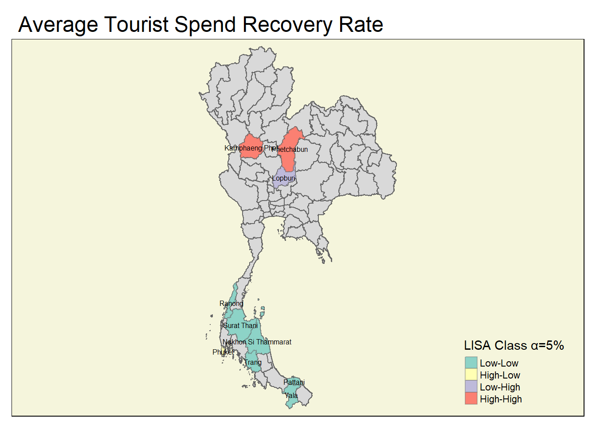
We again display the results tabularly using the code chunk below to make it easier to interpret.
lisa_sig[lisa_sig$mean == "Low-Low", c("Province", "mean")]Simple feature collection with 6 features and 2 fields
Geometry type: MULTIPOLYGON
Dimension: XY
Bounding box: xmin: 98.32594 ymin: 5.613038 xmax: 101.7248 ymax: 10.78906
Geodetic CRS: WGS 84
# A tibble: 6 × 3
Province mean geometry
<chr> <fct> <MULTIPOLYGON [°]>
1 Nakhon Si Thammarat Low-Low (((99.77467 9.313729, 99.77478 9.313647, 99.77488…
2 Surat Thani Low-Low (((99.96396 9.309907, 99.96376 9.30955, 99.96353 …
3 Ranong Low-Low (((98.35294 9.440758, 98.35316 9.440558, 98.3533 …
4 Trang Low-Low (((99.47579 6.97262, 99.47565 6.972616, 99.47537 …
5 Pattani Low-Low (((101.2827 6.952051, 101.2839 6.95182, 101.2848 …
6 Yala Low-Low (((101.2927 6.681118, 101.2937 6.679529, 101.2939…lisa_sig[lisa_sig$mean == "High-High", c("Province", "mean")]Simple feature collection with 2 features and 2 fields
Geometry type: MULTIPOLYGON
Dimension: XY
Bounding box: xmin: 99.01629 ymin: 15.3183 xmax: 101.7972 ymax: 17.178
Geodetic CRS: WGS 84
# A tibble: 2 × 3
Province mean geometry
<chr> <fct> <MULTIPOLYGON [°]>
1 Kamphaeng Phet High-High (((99.48875 16.91044, 99.48883 16.91016, 99.48884 16…
2 Phetchabun High-High (((101.3987 17.17792, 101.399 17.17781, 101.3993 17.…lisa_sig[lisa_sig$mean == "High-Low", c("Province", "mean")]Simple feature collection with 1 feature and 2 fields
Geometry type: MULTIPOLYGON
Dimension: XY
Bounding box: xmin: 98.25791 ymin: 7.478502 xmax: 98.48333 ymax: 8.200333
Geodetic CRS: WGS 84
# A tibble: 1 × 3
Province mean geometry
<chr> <fct> <MULTIPOLYGON [°]>
1 Phuket High-Low (((98.31437 7.478515, 98.31425 7.478502, 98.31417 7.478513,…lisa_sig[lisa_sig$mean == "Low-High", c("Province", "mean")]Simple feature collection with 1 feature and 2 fields
Geometry type: MULTIPOLYGON
Dimension: XY
Bounding box: xmin: 100.42 ymin: 14.64684 xmax: 101.4044 ymax: 15.75613
Geodetic CRS: WGS 84
# A tibble: 1 × 3
Province mean geometry
<chr> <fct> <MULTIPOLYGON [°]>
1 Lopburi Low-High (((101.3453 15.75254, 101.3457 15.75224, 101.3466 15.75236,…The findings can be summarized as:
There are two clusters at the south, totaling 5 provinces, that have slow recovery. This includes the provinces Surat Thani, Nakhon Si Thammarat, Trang, Pattani and Yala
There is a cluster of three provinces at the center that have high recovery rate. This includes Kanpaeng Phet, Phichit and Phetchabun
Phuket is appearing as an outlier with high tourist spend recovery rate relative to its neighbors.
F. Emerging Hot Spot Analysis
Emerging hot-spot analysis or EHSA reveals and describes evolving hot (or cold) spots over time. We will perform this on the main variables (tourism revenue, number of tourists, occupancy) for the total tourist population and on the post-Covid period, as the ongoing period. In addition, we will limit to January 2022 onwards so we minimize the sharp increase coming from the tail end of 2021 as travel restrictions were lifted.
The analysis (for each variable) will consist of four steps:
Constructing the time series cube
Calculating the Getis-Ord local \(G_i^*\) statistic for each bin with FDR correction
Evaluating hot and cold spot trends using Mann-Kendall trend test
Categorising each location by the resulting z-scores and p-valuesxx
F.1 EHSA - Post-covid tourism revenue
We perform EHSA on the post-covid (2022 onwards) values for the total tourism revenue.
We create post-Covid versions of our datasets using the code chunk below so it is easier to refer to them later. We also include a column for the year and month as integers as EHSA requires discrete numeric values as a time variable.
tourism_postCov <- subset(tourism, Date > as.Date("2021-12-31"))
tourism_postCov$YYYYMM <- as.integer(format(tourism_postCov$Date, "%Y%m"))
occupancy_postCov <- subset(occupancy_df, Date > as.Date("2021-12-31"))
occupancy_postCov$YYYYMM <- as.integer(format(occupancy_postCov$Date, "%Y%m"))F.1.1 Creating spacetime cube
We then create the space-time cube using spacetime() for just the post-covid tourism revenue. We use filter() to only select the rows for the measure of interest, and then select() to limit the original dataframe to only the date, province and variable.
stcube <- spacetime(select(filter(tourism_postCov, tourism_postCov$Indicator == "revenue_all"),
YYYYMM, Province, Value),
thai_sf,
.loc_col = "Province",
.time_col = "YYYYMM")To check that the object is in the correct format, we can use is_spacetime_cube() and confirm that it returns TRUE
is_spacetime_cube(stcube)[1] TRUEF.1.2 Calculating \(G_i^*\) statistics
Before computing for the \(G_i^*\) statistics, we need to derive the spatial weights. We use the code chunk below to identify the neighbors and to derive inverse distance weights. The alpha argument of st_inverse_distance() determines the level of distance decay.
stcube_nb <- stcube %>%
activate("geometry") %>%
mutate(nb = include_self(
st_contiguity(geometry)),
wt=st_inverse_distance(nb,
geometry,
scale = 1,
alpha = 1),
.before = 1) %>%
set_nbs("nb") %>%
set_wts("wt")! Polygon provided. Using point on surface.Warning: There was 1 warning in `stopifnot()`.
ℹ In argument: `wt = st_inverse_distance(nb, geometry, scale = 1, alpha = 1)`.
Caused by warning in `st_point_on_surface.sfc()`:
! st_point_on_surface may not give correct results for longitude/latitude dataWe then use the following chunk to calculate the local \(G_i^*\) for each location. We do this using local_gstar_perm() of sfdep package. We then use unnest() to unnest the gi_star column of the newly created data frame.
gi_stars <- stcube_nb %>%
group_by(YYYYMM) %>%
mutate(gi_star = local_gstar_perm(
Value, nb, wt)) %>%
tidyr::unnest(gi_star)F.1.3 Identifying Hot- and Cold-spots using Mann Kendall test
The Mann Kendall test checks for signs of monotonicity for a the local \(G_i^*\) statistic. Where the results are significant, the test infers that there are signs of monotonicity for that province / observation.
The code chunk below runs the Mann Kendall test (without permutations) on each province for the selected variable using MannKendall(). Provinces where the tau value is positive are showing an increasing trend, while negative tau values show decreasing trend.
We display the records with significant test results, and show negative and positive tau values as separate tables.
ehsa <- gi_stars %>%
group_by(Province) %>%
summarise(mk = list(
unclass(
Kendall::MannKendall(gi_star)))) %>%
tidyr::unnest_wider(mk)
filter(ehsa, sl < 0.05, tau > 0)# A tibble: 33 × 6
Province tau sl S D varS
<chr> <dbl> <dbl> <dbl> <dbl> <dbl>
1 Amnat Charoen 0.956 0.00000250 87 91.0 334.
2 Bangkok 0.473 0.0215 43 91.0 334.
3 Bueng Kan 0.626 0.00217 57 91.0 334.
4 Buriram 0.758 0.000197 69 91.0 334.
5 Chaiyaphum 0.780 0.000127 71 91.0 334.
6 Chanthaburi 0.626 0.00217 57 91.0 334.
7 Kalasin 0.802 0.0000809 73 91.0 334.
8 Kamphaeng Phet 0.890 0.0000119 81 91.0 334.
9 Lampang 0.626 0.00217 57 91.0 334.
10 Lamphun 0.956 0.00000250 87 91.0 334.
# ℹ 23 more rowsfilter(ehsa, sl < 0.05, tau < 0)# A tibble: 21 × 6
Province tau sl S D varS
<chr> <dbl> <dbl> <dbl> <dbl> <dbl>
1 Ang Thong -0.582 0.00442 -53 91.0 334.
2 Chachoengsao -0.802 0.0000809 -73 91.0 334.
3 Chainat -0.626 0.00217 -57 91.0 334.
4 Chiang Rai -0.429 0.0375 -39 91.0 334.
5 Chumphon -0.890 0.0000119 -81 91.0 334.
6 Kanchanaburi -0.890 0.0000119 -81 91.0 334.
7 Mae Hong Son -0.429 0.0375 -39 91.0 334.
8 Mukdahan -0.473 0.0215 -43 91.0 334.
9 Phetchabun -0.824 0.0000510 -75 91.0 334.
10 Phetchaburi -0.802 0.0000809 -73 91.0 334.
# ℹ 11 more rowsThe results show that 33 of the 77 provinces are showing significant positive trend– which might be expected as provinces are recovering post-Covid. However, there are 21 provinces which are showing a significant negative trend which might be a concern if any of these are expected to be major tourist destinations.
F.1.4 Emerging Hot Spot Analysis
We can use emerging_hot_spot_analysis() to perform EHSA, including the previous hypothesis testing, and classify provinces based on the test results.
The code chunk below uses emerging_hot_spot_analysis() directly on the spacetime cube to run the test with 100 permutations.
ehsa <- emerging_hotspot_analysis(
x = stcube,
.var = "Value",
k = 1,
nsim = 99
)We can visualize the number of provinces per category using the code chunk below which utilizes ggplot() to build a bar chart.
ggplot(data = ehsa,
aes(x = classification)) +
geom_bar(fill = "lightblue") +
labs(title = "EHSA Classification - PostCovid Tourism Revenue",
y = "Number of Provinces", x="") +
theme_minimal() +
geom_text(stat = 'count', aes(label = ..count..), vjust = 0) +
theme(axis.text.x = element_text(angle = 90, vjust = 0.5, hjust = 1))Warning: The dot-dot notation (`..count..`) was deprecated in ggplot2 3.4.0.
ℹ Please use `after_stat(count)` instead.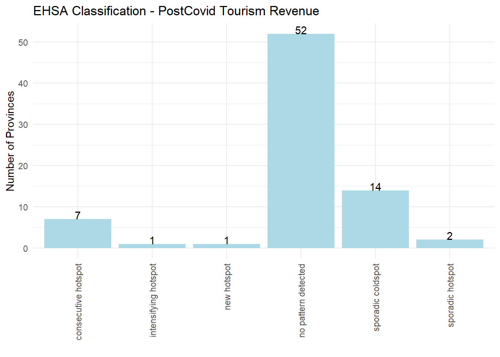
We can also visualize the hot- and coldspot classifications visually. First, we need to combine the ehsa object with the sf dataframe with the code chunk below.
thai_ehsa <- thai_sf %>%
left_join(ehsa,
by = join_by(Province == location))Next, we use tmap package to create a choropleth map based on the EHSA classification. We only include provinces that have significant test results and a pattern detected.
ehsa_sig <- filter(thai_ehsa, !(classification == "no pattern detected"), p_value < 0.05)
tmap_mode("plot")tmap mode set to plottingtm_shape(thai_ehsa) +
tm_polygons() +
tm_borders(alpha = 0.5) +
tm_shape(ehsa_sig) +
tm_fill("classification", title = "EHSA Classification") +
tm_text("Province", size = 0.5) +
tm_borders(alpha = 0.4) +
tm_layout(
main.title = "Post Covid Tourism Revenue",
legend.position = c("right", "bottom"),
bg.color = "beige",
asp = 0)Warning: One tm layer group has duplicated layer types, which are omitted. To
draw multiple layers of the same type, use multiple layer groups (i.e. specify
tm_shape prior to each of them).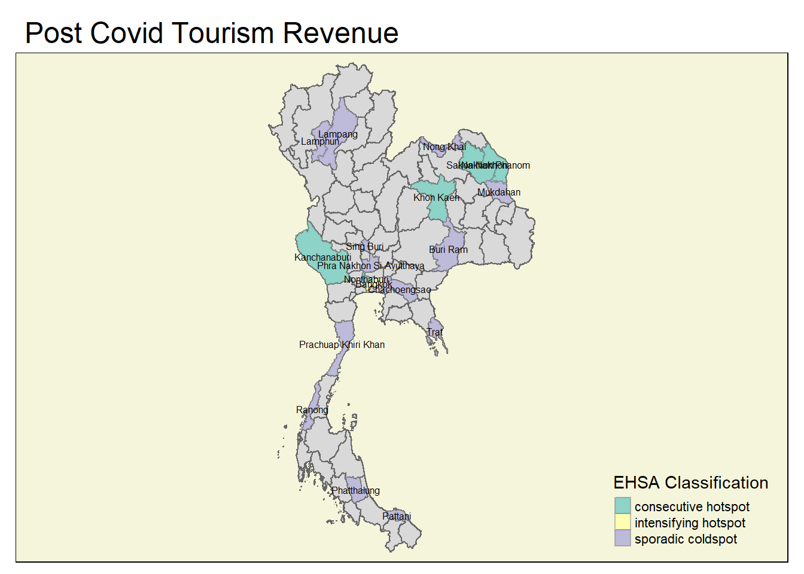
We can display the same provinces tabularly using the code chunk below
for (i in unique(ehsa_sig$classification)){
print(as.matrix(ehsa_sig[ehsa_sig$classification == i, c("Province", "classification")]))
} Province classification geometry
1 "Bangkok" "intensifying hotspot" MULTIPOLYGON (((100.6139 13...
Province classification geometry
2 "Nonthaburi" "consecutive hotspot" MULTIPOLYGON (((100.3415 14...
8 "Khon Kaen" "consecutive hotspot" MULTIPOLYGON (((102.7072 17...
10 "Sakon Nakhon" "consecutive hotspot" MULTIPOLYGON (((103.5404 18...
11 "Nakhon Phanom" "consecutive hotspot" MULTIPOLYGON (((104.192 18....
15 "Kanchanaburi" "consecutive hotspot" MULTIPOLYGON (((98.58631 15...
Province classification
3 "Phra Nakhon Si Ayutthaya" "sporadic coldspot"
4 "Sing Buri" "sporadic coldspot"
5 "Trat" "sporadic coldspot"
6 "Chachoengsao" "sporadic coldspot"
7 "Buri Ram" "sporadic coldspot"
9 "Nong Khai" "sporadic coldspot"
12 "Mukdahan" "sporadic coldspot"
13 "Lamphun" "sporadic coldspot"
14 "Lampang" "sporadic coldspot"
16 "Prachuap Khiri Khan" "sporadic coldspot"
17 "Ranong" "sporadic coldspot"
18 "Phatthalung" "sporadic coldspot"
19 "Pattani" "sporadic coldspot"
geometry
3 MULTIPOLYGON (((100.5131 14...
4 MULTIPOLYGON (((100.3691 15...
5 MULTIPOLYGON (((102.5216 11...
6 MULTIPOLYGON (((101.0612 13...
7 MULTIPOLYGON (((102.9303 15...
9 MULTIPOLYGON (((103.2985 18...
12 MULTIPOLYGON (((104.2527 16...
13 MULTIPOLYGON (((99.18821 18...
14 MULTIPOLYGON (((99.58445 19...
16 MULTIPOLYGON (((99.56326 11...
17 MULTIPOLYGON (((98.35294 9....
18 MULTIPOLYGON (((99.96416 7....
19 MULTIPOLYGON (((101.2827 6....The results identifies Bangkok as an intensifying hotspot, and six others as consecutive hotspots.
There are 13 provinces identified as sporadic coldspots which are locations that are cold spots for less than 90% of the time, but never identified as significant hotspots.
F.2 EHSA - Post-covid number of tourists
We perform EHSA on the post-covid (2022 onwards) values for the total number of tourists.
F.2.1 Creating spacetime cube
We then create the space-time cube using spacetime() for just the post-covid number of tourists. We use filter() to only select the rows for the measure of interest, and then select() to limit the original dataframe to only the date, province and variable.
stcube <- spacetime(select(filter(tourism_postCov, tourism_postCov$Indicator == "no_tourist_all"),
YYYYMM, Province, Value),
thai_sf,
.loc_col = "Province",
.time_col = "YYYYMM")To check that the object is in the correct format, we can use is_spacetime_cube() and confirm that it returns TRUE
is_spacetime_cube(stcube)[1] TRUEF.2.2 Calculating \(G_i^*\) statistics
Before computing for the \(G_i^*\) statistics, we need to derive the spatial weights. We use the code chunk below to identify the neighbors and to derive inverse distance weights. The alpha argument of st_inverse_distance() determines the level of distance decay.
stcube_nb <- stcube %>%
activate("geometry") %>%
mutate(nb = include_self(
st_contiguity(geometry)),
wt=st_inverse_distance(nb,
geometry,
scale = 1,
alpha = 1),
.before = 1) %>%
set_nbs("nb") %>%
set_wts("wt")We then use the following chunk to calculate the local \(G_i^*\) for each location. We do this using local_gstar_perm() of sfdep package. We then use unnest() to unnest the gi_star column of the newly created data frame.
gi_stars <- stcube_nb %>%
group_by(YYYYMM) %>%
mutate(gi_star = local_gstar_perm(
Value, nb, wt)) %>%
tidyr::unnest(gi_star)F.2.3 Identifying Hot- and Cold-spots using Mann Kendall test
The code chunk below runs the Mann Kendall test (without permutations) on each province using MannKendall(). Provinces where the tau value is positive are showing an increasing trend, while negative tau values show decreasing trend.
We display the records with significant test results, and show negative and positive tau values as separate tables.
ehsa <- gi_stars %>%
group_by(Province) %>%
summarise(mk = list(
unclass(
Kendall::MannKendall(gi_star)))) %>%
tidyr::unnest_wider(mk)
filter(ehsa, sl < 0.05, tau > 0)# A tibble: 14 × 6
Province tau sl S D varS
<chr> <dbl> <dbl> <dbl> <dbl> <dbl>
1 Bangkok 0.648 0.00150 59 91.0 334.
2 Krabi 0.714 0.000459 65 91.0 334.
3 Nakhon Si Thammarat 0.890 0.0000119 81 91.0 334.
4 Nonthaburi 0.626 0.00217 57 91.0 334.
5 Pattani 0.648 0.00150 59 91.0 334.
6 Phatthalung 0.780 0.000127 71 91.0 334.
7 Phra Nakhon Si Ayutthaya 0.604 0.00311 55 91.0 334.
8 Phuket 0.670 0.00102 61 91.0 334.
9 Prachuap Khiri Khan 0.648 0.00150 59 91.0 334.
10 Ratchaburi 0.429 0.0375 39 91.0 334.
11 Samut Prakan 0.473 0.0215 43 91.0 334.
12 Surat Thani 0.648 0.00150 59 91.0 334.
13 Tak 0.692 0.000688 63 91.0 334.
14 Trang 0.451 0.0285 41 91.0 334.filter(ehsa, sl < 0.05, tau < 0)# A tibble: 18 × 6
Province tau sl S D varS
<chr> <dbl> <dbl> <dbl> <dbl> <dbl>
1 Chachoengsao -0.758 0.000197 -69 91.0 334.
2 Kanchanaburi -0.692 0.000688 -63 91.0 334.
3 Khon Kaen -0.604 0.00311 -55 91.0 334.
4 Loei -0.516 0.0118 -47 91.0 334.
5 Mukdahan -0.648 0.00150 -59 91.0 334.
6 Nakhon Nayok -0.824 0.0000510 -75 91.0 334.
7 Nakhon Pathom -0.495 0.0160 -45 91.0 334.
8 Nong Khai -0.648 0.00150 -59 91.0 334.
9 Phetchabun -0.560 0.00620 -51 91.0 334.
10 Phetchaburi -0.780 0.000127 -71 91.0 334.
11 Samut Sakhon -0.802 0.0000809 -73 91.0 334.
12 Samut Songkhram -0.780 0.000127 -71 91.0 334.
13 Sing Buri -0.626 0.00217 -57 91.0 334.
14 Surin -0.560 0.00620 -51 91.0 334.
15 Trat -0.780 0.000127 -71 91.0 334.
16 Ubon Ratchathani -0.495 0.0160 -45 91.0 334.
17 Udon Thani -0.407 0.0487 -37 91.0 334.
18 Yasothon -0.758 0.000197 -69 91.0 334.The results show that 14 of the 77 provinces are showing significant positive trend. However, there are 18 provinces (more) which are showing a significant negative trend.
F.2.4 Emerging Hot Spot Analysis
We can use emerging_hot_spot_analysis() to perform EHSA, including the previous hypothesis testing, and classify provinces based on the test results.
The code chunk below uses emerging_hot_spot_analysis() directly on the spacetime cube to run the test with 100 permutations.
ehsa <- emerging_hotspot_analysis(
x = stcube,
.var = "Value",
k = 1,
nsim = 99
)We can visualize the number of provinces per category using the code chunk below which utilizes ggplot() to build a bar chart.
ggplot(data = ehsa,
aes(x = classification)) +
geom_bar(fill = "lightblue") +
labs(title = "EHSA Classification - PostCovid Tourism Revenue",
y = "Number of Provinces", x="") +
theme_minimal() +
geom_text(stat = 'count', aes(label = ..count..), vjust = 0) +
theme(axis.text.x = element_text(angle = 90, vjust = 0.5, hjust = 1))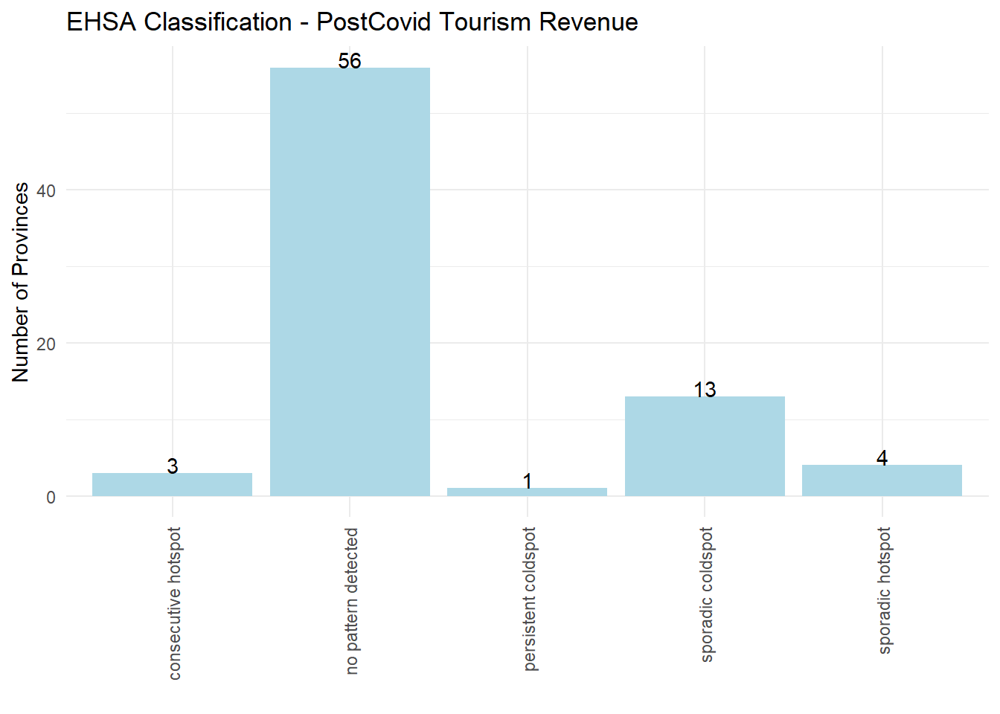
We can also visualize the hot- and coldspot classifications visually. First, we need to combine the ehsa object with the sf dataframe with the code chunk below.
thai_ehsa <- thai_sf %>%
left_join(ehsa,
by = join_by(Province == location))Next, we use tmap package to create a choropleth map based on the EHSA classification. We only include provinces that have significant test results and a pattern detected.
ehsa_sig <- filter(thai_ehsa, !(classification == "no pattern detected"), p_value < 0.05)
tmap_mode("plot")tmap mode set to plottingtm_shape(thai_ehsa) +
tm_polygons() +
tm_borders(alpha = 0.5) +
tm_shape(ehsa_sig) +
tm_fill("classification", title = "EHSA Classification") +
tm_text("Province", size = 0.5) +
tm_borders(alpha = 0.4) +
tm_layout(
main.title = "Post Covid Number of Tourists",
legend.position = c("right", "bottom"),
bg.color = "beige",
asp = 0)Warning: One tm layer group has duplicated layer types, which are omitted. To
draw multiple layers of the same type, use multiple layer groups (i.e. specify
tm_shape prior to each of them).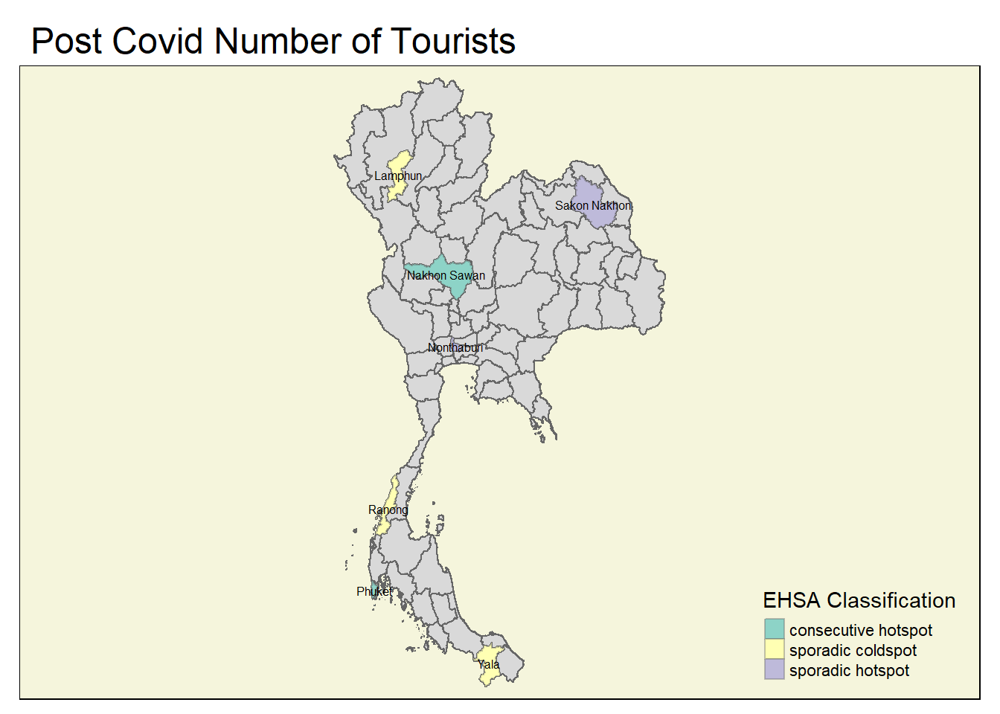
We can display the same provinces tabularly using the code chunk below
for (i in unique(ehsa_sig$classification)){
print(as.matrix(ehsa_sig[ehsa_sig$classification == i, c("Province", "classification")]))
} Province classification geometry
1 "Nonthaburi" "sporadic hotspot" MULTIPOLYGON (((100.3415 14...
2 "Sakon Nakhon" "sporadic hotspot" MULTIPOLYGON (((103.5404 18...
Province classification geometry
3 "Lamphun" "sporadic coldspot" MULTIPOLYGON (((99.18821 18...
6 "Ranong" "sporadic coldspot" MULTIPOLYGON (((98.35294 9....
7 "Yala" "sporadic coldspot" MULTIPOLYGON (((101.2927 6....
Province classification geometry
4 "Nakhon Sawan" "consecutive hotspot" MULTIPOLYGON (((100.0266 16...
5 "Phuket" "consecutive hotspot" MULTIPOLYGON (((98.31437 7....The results identifies Phuket and Nakhon Sawan as consecutive hotspots which means they had a single uninterrupted run of being significant hotspots, but have been significant hotspot for less than 90% of the time.
Nonthaburi and Sakon Nakhon are sporadic hotspots, while Lamphun, Ranong and Yala are sporadic coldspots which mean that they have been on-and-off as hot and coldspots for the number of tourists.
F.3 EHSA - Occupancy Rate
We perform EHSA on the post-covid (2022 onwards) values for the tourist occupancy rates.
F.3.1 Creating spacetime cube
We then create the space-time cube using spacetime() for just the occupancy rates. We use select() to limit the original dataframe to only the date, province and variable.
stcube <- spacetime(select(occupancy_postCov,
YYYYMM, Province, occupancy),
thai_sf,
.loc_col = "Province",
.time_col = "YYYYMM")To check that the object is in the correct format, we can use is_spacetime_cube() and confirm that it returns TRUE
is_spacetime_cube(stcube)[1] TRUEF.3.2 Calculating \(G_i^*\) statistics
Before computing for the \(G_i^*\) statistics, we need to derive the spatial weights. We use the code chunk below to identify the neighbors and to derive inverse distance weights. The alpha argument of st_inverse_distance() determines the level of distance decay.
stcube_nb <- stcube %>%
activate("geometry") %>%
mutate(nb = include_self(
st_contiguity(geometry)),
wt=st_inverse_distance(nb,
geometry,
scale = 1,
alpha = 1),
.before = 1) %>%
set_nbs("nb") %>%
set_wts("wt")We then use the following chunk to calculate the local \(G_i^*\) for each location. We do this using local_gstar_perm() of sfdep package. We then use unnest() to unnest the gi_star column of the newly created data frame.
gi_stars <- stcube_nb %>%
group_by(YYYYMM) %>%
mutate(gi_star = local_gstar_perm(
occupancy, nb, wt)) %>%
tidyr::unnest(gi_star)F.3.3 Identifying Hot- and Cold-spots using Mann Kendall test
The code chunk below runs the Mann Kendall test (without permutations) on each province using MannKendall(). Provinces where the tau value is positive are showing an increasing trend, while negative tau values show decreasing trend.
We display the records with significant test results, and show negative and positive tau values as separate tables.
ehsa <- gi_stars %>%
group_by(Province) %>%
summarise(mk = list(
unclass(
Kendall::MannKendall(gi_star)))) %>%
tidyr::unnest_wider(mk)
filter(ehsa, sl < 0.05, tau > 0)# A tibble: 17 × 6
Province tau sl S D varS
<chr> <dbl> <dbl> <dbl> <dbl> <dbl>
1 Bangkok 0.934 0.00000429 85 91.0 334.
2 Buriram 0.604 0.00311 55 91.0 334.
3 Chumphon 0.670 0.00102 61 91.0 334.
4 Krabi 0.714 0.000459 65 91.0 334.
5 Nakhon Si Thammarat 0.824 0.0000510 75 91.0 334.
6 Narathiwat 0.626 0.00217 57 91.0 334.
7 Nonthaburi 0.714 0.000459 65 91.0 334.
8 Phatthalung 0.692 0.000688 63 91.0 334.
9 Phuket 0.890 0.0000119 81 91.0 334.
10 Prachuap Khiri Khan 0.934 0.00000429 85 91.0 334.
11 Ranong 0.560 0.00620 51 91.0 334.
12 Ratchaburi 0.604 0.00311 55 91.0 334.
13 Rayong 0.626 0.00217 57 91.0 334.
14 Samut Prakan 0.736 0.000302 67 91.0 334.
15 Songkhla 0.648 0.00150 59 91.0 334.
16 Surat Thani 0.912 0.00000715 83 91.0 334.
17 Yala 0.495 0.0160 45 91.0 334.filter(ehsa, sl < 0.05, tau < 0)# A tibble: 23 × 6
Province tau sl S D varS
<chr> <dbl> <dbl> <dbl> <dbl> <dbl>
1 Amnat Charoen -0.780 0.000127 -71 91.0 334.
2 Chachoengsao -0.582 0.00442 -53 91.0 334.
3 Chainat -0.473 0.0215 -43 91.0 334.
4 Chaiyaphum -0.736 0.000302 -67 91.0 334.
5 Chanthaburi -0.429 0.0375 -39 91.0 334.
6 Kanchanaburi -0.582 0.00442 -53 91.0 334.
7 Lopburi -0.451 0.0285 -41 91.0 334.
8 Nakhon Nayok -0.604 0.00311 -55 91.0 334.
9 Nakhon Pathom -0.648 0.00150 -59 91.0 334.
10 Nakhon Sawan -0.451 0.0285 -41 91.0 334.
# ℹ 13 more rowsThe results show that 17 of the 77 provinces are showing significant positive trend. However, there are 23 provinces (more) which are showing a significant negative trend.
F.3.4 Emerging Hot Spot Analysis
We can use emerging_hot_spot_analysis() to perform EHSA, including the previous hypothesis testing, and classify provinces based on the test results.
The code chunk below uses emerging_hot_spot_analysis() directly on the spacetime cube to run the test with 100 permutations.
ehsa <- emerging_hotspot_analysis(
x = stcube,
.var = "occupancy",
k = 1,
nsim = 99
)We can visualize the number of provinces per category using the code chunk below which utilizes ggplot() to build a bar chart.
ggplot(data = ehsa,
aes(x = classification)) +
geom_bar(fill = "lightblue") +
labs(title = "EHSA Classification - PostCovid Tourism Revenue",
y = "Number of Provinces", x="") +
theme_minimal() +
geom_text(stat = 'count', aes(label = ..count..), vjust = 0) +
theme(axis.text.x = element_text(angle = 90, vjust = 0.5, hjust = 1))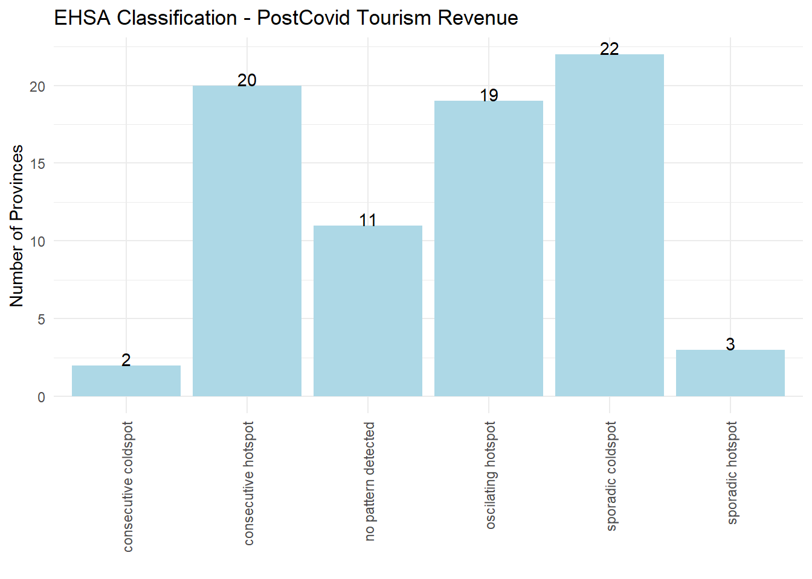
We can also visualize the hot- and coldspot classifications visually. First, we need to combine the ehsa object with the sf dataframe with the code chunk below.
thai_ehsa <- thai_sf %>%
left_join(ehsa,
by = join_by(Province == location))Next, we use tmap package to create a choropleth map based on the EHSA classification. We only include provinces that have significant test results and a pattern detected.
ehsa_sig <- filter(thai_ehsa, !(classification == "no pattern detected"), p_value < 0.05)
tmap_mode("plot")tmap mode set to plottingtm_shape(thai_ehsa) +
tm_polygons() +
tm_borders(alpha = 0.5) +
tm_shape(ehsa_sig) +
tm_fill("classification", title = "EHSA Classification") +
tm_text("Province", size = 0.5) +
tm_borders(alpha = 0.4) +
tm_layout(
main.title = "Post Covid Tourist Occupancy Rate",
legend.position = c("right", "bottom"),
bg.color = "beige",
asp = 0)Warning: One tm layer group has duplicated layer types, which are omitted. To
draw multiple layers of the same type, use multiple layer groups (i.e. specify
tm_shape prior to each of them).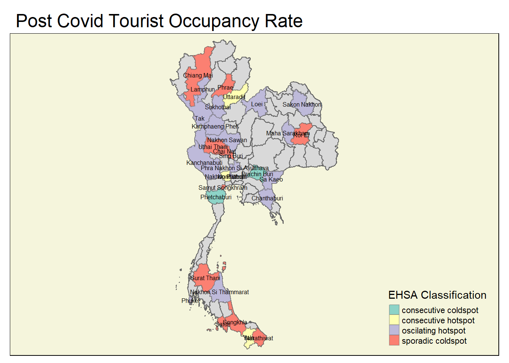
We can display the same provinces tabularly using the code chunk below
for (i in unique(ehsa_sig$classification)){
print(as.matrix(ehsa_sig[ehsa_sig$classification == i, c("Province", "classification")]))
} Province classification
1 "Nonthaburi" "oscilating hotspot"
2 "Phra Nakhon Si Ayutthaya" "oscilating hotspot"
5 "Chanthaburi" "oscilating hotspot"
7 "Sa Kaeo" "oscilating hotspot"
8 "Loei" "oscilating hotspot"
9 "Maha Sarakham" "oscilating hotspot"
11 "Sakon Nakhon" "oscilating hotspot"
13 "Lamphun" "oscilating hotspot"
16 "Nakhon Sawan" "oscilating hotspot"
18 "Kamphaeng Phet" "oscilating hotspot"
19 "Tak" "oscilating hotspot"
20 "Sukhothai" "oscilating hotspot"
21 "Kanchanaburi" "oscilating hotspot"
25 "Nakhon Si Thammarat" "oscilating hotspot"
26 "Phuket" "oscilating hotspot"
geometry
1 MULTIPOLYGON (((100.3415 14...
2 MULTIPOLYGON (((100.5131 14...
5 MULTIPOLYGON (((102.2517 12...
7 MULTIPOLYGON (((102.1877 14...
8 MULTIPOLYGON (((102.095 18....
9 MULTIPOLYGON (((103.1562 16...
11 MULTIPOLYGON (((103.5404 18...
13 MULTIPOLYGON (((99.18821 18...
16 MULTIPOLYGON (((100.0266 16...
18 MULTIPOLYGON (((99.48875 16...
19 MULTIPOLYGON (((97.97318 17...
20 MULTIPOLYGON (((99.60051 17...
21 MULTIPOLYGON (((98.58631 15...
25 MULTIPOLYGON (((99.77467 9....
26 MULTIPOLYGON (((98.31437 7....
Province classification geometry
3 "Sing Buri" "sporadic coldspot" MULTIPOLYGON (((100.3691 15...
4 "Chai Nat" "sporadic coldspot" MULTIPOLYGON (((100.1199 15...
10 "Roi Et" "sporadic coldspot" MULTIPOLYGON (((104.314 16....
12 "Chiang Mai" "sporadic coldspot" MULTIPOLYGON (((99.52512 20...
15 "Phrae" "sporadic coldspot" MULTIPOLYGON (((100.1597 18...
17 "Uthai Thani" "sporadic coldspot" MULTIPOLYGON (((99.13905 15...
23 "Samut Songkhram" "sporadic coldspot" MULTIPOLYGON (((100.0116 13...
27 "Surat Thani" "sporadic coldspot" MULTIPOLYGON (((99.96396 9....
28 "Songkhla" "sporadic coldspot" MULTIPOLYGON (((100.5973 7....
29 "Satun" "sporadic coldspot" MULTIPOLYGON (((100.0903 6....
31 "Narathiwat" "sporadic coldspot" MULTIPOLYGON (((101.6323 6....
Province classification geometry
6 "Prachin Buri" "consecutive coldspot" MULTIPOLYGON (((101.4881 14...
24 "Phetchaburi" "consecutive coldspot" MULTIPOLYGON (((99.75869 13...
Province classification geometry
14 "Uttaradit" "consecutive hotspot" MULTIPOLYGON (((101.0924 18...
22 "Nakhon Pathom" "consecutive hotspot" MULTIPOLYGON (((100.2231 14...
30 "Yala" "consecutive hotspot" MULTIPOLYGON (((101.2927 6....The results identify a number of cold and hotspots. If we focus on the coldspots:
we see that Prachin Buri and Phetchaburi are consecutive coldspots
A list of 11 provinces, including Chiang Mai, are sporadic coldspots
G. Conclusion
We have conducted various analyses on the tourism indicators across provinces in Thailand. Among the results, policy makers may want to their attention on provinces that are performing worse than the rest of the country, or their neighbors, in terms of performance or recovery.
A cluster in the Southern part of Thailand including Phuket and Krabi is exhibiting slower recovery across revenue, number of tourists, and consequently, the spend per tourist
A number of coldspots have been identified specifically for the post-Covid period, and key provinces for tourism among these here need to be identified (e.g., Chiang Mai is appearing as a sporadic coldspot for the occupancy rate)
Further study is needed to understand if there are underlying factors that result to such provinces to be performing or recovering worse than others, and the types of interventions that will address such factors.